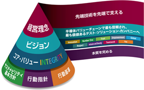
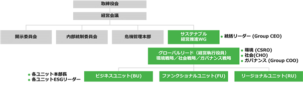

文中の将来に関する事項は、当連結会計年度末現在において当社グループが判断したものであります。
(1)会社の経営の基本方針:「The Advantest Way」
当社グループは、経営理念として「先端技術を先端で支える」を掲げています。すなわち、「世界中の顧客にご満足いただける製品・サービスを提供するためにたえず自己研鑽に励み、最先端の技術開発を通して社会の発展に貢献する」ことが当社グループの使命であり、またこれを追求し続けることで当社グループの社会的な存在意義は拡大するものと認識しています。
また過去からの事業拡大に向けた取り組みの結果、当社グループは多様な文化、言語、慣習、価値観を内包する組織となっていることから、経営理念に即した事業活動を行う前提として、共通価値観の醸成や共通の行動原則が重要となっています。
これらを総合し、当社グループは2019年に、過去から有していた企業理念体系「The Advantest Way」を発展させ、当社グループが今後進むべき方向性と大切にすべき価値観を包含するものへ改定しました。現在の当社グループの中長期的な経営戦略や事業活動は、すべてこの改定版「The Advantest Way」に沿って展開されています。当社グループは、「The Advantest Way」に沿った活動を実践し続けることで顧客や社会への提供価値を最大化し、各ステークホルダーからより厚い信頼を得られるよう努めます。
「The Advantest Way」は、以下の6要素から構成されます。
1. 経営理念(パーパス&ミッション):「先端技術を先端で支える」
2. ビジョン・ステートメント:「半導体バリューチェーンで最も信頼され、最も価値あるテスト・ソリューション・カンパニーへ(Be the most trusted and valued test solution company in the semiconductor value chain)」
3. コア・バリュー:「INTEGRITY」
4. 「サステナビリティ基本方針」
5. 「行動指針」:「本質を究める」
6. 「行動基準」

1～3は、社会発展への貢献と中長期的な企業価値向上に向けて当社グループがどうありたいか、何をなすべきかを規定しています。4～6は、望まれるステークホルダーとの関係性や、業務遂行にあたり役員や従業員に求める価値観やふるまいなどを定めています。
(2)中長期経営方針「グランドデザイン」
当社グループは、経営理念である「先端技術を先端で支える」を体現する会社であり続けるため、長期的にどうありたいか、そしてそのために何をなすべきか等の当社グループの進むべき方向性を、2018年より中長期経営方針「グランドデザイン」として定めています。
2018年版の「グランドデザイン」のもとでは、第1期と第2期の二つの中期経営計画を推進し、当初の構想を超えた規模とスピードで当社グループの市場シェア向上、業容拡大、収益性改善を実現しました。
そして2024年、当社グループをさらに発展させるため、また当社グループが顧客や社会にとって価値ある存在であり続けるため、「グランドデザイン」をそれまでの経営・事業体制の変化や当時最新の長期事業環境見通しを踏まえた内容へ改定しました。
当社グループは今後、この改定版「グランドデザイン」に則り、ステークホルダーへの提供価値の拡大と経営基盤の強化に努めてまいります。
<ビジョン・ステートメント>
「半導体バリューチェーンで最も信頼され、最も価値あるテスト・ソリューション・カンパニーへ」
(Be the most trusted and valued test solution company in the semiconductor value chain)
当社グループは、提供価値の拡大を通じ、すべてのステークホルダーから半導体バリューチェーンで最も信頼され、最も価値あるテスト・ソリューション・カンパニーとなることを目指します。
<長期事業環境認識と対処すべき課題>
マクロ的な事業環境における将来の不確実性は、今後も高い状態が継続すると予想されます。気候変動、地政学的リスク、エネルギー、人口動態の変化など、世界を取り巻く問題はより深刻化しており、社会課題の複雑化が飛躍的に進んでいます。
一方で、AIに代表される、これら社会課題を解決するためのイノベーションが多様な産業でダイナミックに進行しています。社会的イノベーションの基盤となる半導体に対しては、さらなる性能改善と経済合理性確保に向けた企業間・地域間連携の拡大や、域内供給体制の強化などが進展しています。これらに沿い、半導体バリューチェーンは、その複雑さをさらに増しつつ、中長期的な発展を遂げていくと想定しています。
さらに半導体テストの技術的な潮流について展望すると、さらなる微細化、新アーキテクチャーの採用、先端パッケージの採用など、半導体の高性能化とエネルギー効率向上を実現するための技術進化が、半導体テストの複雑性を今後も持続的に引き上げていく見通しです。とりわけ、今後の半導体市場の最大の成長牽引役と予想されるAIやHPC(ハイ・パフォーマンス・コンピューティング)関連の半導体において、テストの複雑性は一層顕著となると見込まれます。
このように複雑性の進行が業界のキートレンドとなる中、半導体テスト関連市場は、顧客のテスト能力増強投資を通じ、中長期的な市場成長を遂げると予想しています。また今後のテスト・ソリューションにおいては、半導体の品質保証プロセスにおける効率性向上をもたらす、より高度な自動化が望まれる方向と分析しています。こうした潮流下、当社グループは、より性能に優れる製品の開発・販売に加え、それら製品群を発展・統合した新たなソリューションやサービスの提供がさらなる成長機会となると見込んでおり、その機会の具体化を今後の中長期成長施策の基軸とする方針です。また業界全体が複雑化する中にあっては当社グループ自身においても効率が重要であり、経営及び事業全般にわたって様々な効率性の向上に取り組みます。
<経営における長期的目標>
半導体は、サステナブルな社会の実現や多様な産業の発展に向けて今後も不可欠な存在とされています。そして現在の当社グループにおけるほぼすべての事業は、より性能に優れた半導体の実現と普及に深く結びつくものとなっています。このことから当社グループが経営理念に基づき、先端の技術開発を通じてより良い半導体の開発と普及に寄与していくことは、自社の持続的な成長のみならず、さらなる「安全・安心・心地よい」社会実現に向けても直接的に貢献する行為であり続けると考えます。
今後当社グループは、テストの複雑化への対応などを含めた顧客課題の解決を軸としながらサステナブルな社会実現につながる取り組みを推進し、それを通じて各ステークホルダーに対して提供する経済的・社会的価値を多面的かつバランスよく拡大することを、経営における長期的な目標とします。
(3)第3期中期経営計画(MTP3、2024～2026年度)の概要
半導体テスト関連市場は、短期的なダウンサイクルを織り込みつつも、中長期的に成長を続けると見込んでいます。また半導体市場の拡大に加え、半導体の複雑性への対応が業界における構造課題となる中で、当社グループの事業機会は中長期的に拡大するものと考えています。
このような環境のもと、当社グループは、改定した「グランドデザイン」に則り策定した、第3期となる3か年中期経営計画(MTP3)を2024年度より展開しています。MTP3で掲げた各戦略施策については、“Automation of Test”の提供実現に向けた取り組みや、その基盤となる業界内エコシステムの構築を筆頭に、総じて想定を上回る進捗と認識しています。MTP3の最終年度となる2026年度は、中長期的な企業価値向上に向けた各種の取り組みを引き続き推進いたします。
<戦略>
1. Outpace the growth in our core market(コア市場の成長率を上回る成長実現)
当社グループの今後のコア市場においては、半導体の生産量増加、半導体の高性能化、そして半導体の複雑性進行への対応が重要な成長機会となると想定しています。これに対しては、個々のテスト・ソリューションの性能向上に加え、顧客に“Automation of Test”、すなわち半導体テストの効率性向上をもたらす新たな価値を、当社グループが擁する多様な製品・ソリューション群の有機的な結合や社外パートナーとの連携などを通じて創造します。これらにより、市場成長率を上回る事業成長を引き続き実現することを目指します。
当戦略領域における2025年度の主な進捗は以下となります。
・テスト需要の変化を先読みした顧客訴求力ある製品の拡販や重点顧客・地域戦略を通じ、半導体テスタ市場における市場シェアをさらに拡大(市場シェア: 暦年2024年 58%、暦年2025年 65%)
・複数の次世代テスト・ソリューションを新たに展開
・中長期的な業界課題の解決に向け、研究開発体制を充実。また、次世代DRAM向けやシリコンフォトニクス向けなど今後期待の高い領域における高付加価値テスト・ソリューションの市場投入準備が進捗。シリコンフォトニクスは大規模量産向け用途で初受注
2. Expand adjacently / new businesses(近縁市場・新規事業領域への展開)
半導体の高性能化や複雑性が進行する中では、より広く、統合されたテスト・ソリューションが望まれます。当社グループはこれまでもシステムレベルテストやテスト周辺機器への事業展開を進めてきましたが、今後もこのアプローチを継続することで顧客への提供価値をさらに拡大します。具体的には、当社製品のインストールベースを活用したフィールド・サービスやAdvantest Cloud Solutions™の販促に取り組むほか、Applied Research & Ventureの取り組みを通じた事業機会創生にも挑戦します。
当戦略領域における2025年度の主な進捗は以下となります。
・シリコン検証を自動化する画期的なソリューション「SiConicTM」の業界内認知が拡大
・テスト価値のさらなる創出に向け、「Advantest Innovation Center」の開設や、Applied Materials, Inc.社のEPIC(Equipment and Process Innovation and Commercialization)プラットフォームへの参画など、業界横断的な協働の取り組みを拡充
・顧客の将来のニーズに応える高性能トータル・テスト・ソリューション実現に向けて、プローブカード・メーカー3社との戦略パートナーシップを深耕
3. Drive operational excellence(オペレーショナル・エクセレンスへの取り組みを推進)
当社グループは、技術、ノウハウ、リソースの活用を部門横断的に進めることで、半導体業界におけるテスト課題を解決していきます。また、当社グループのステークホルダーすべてにとって価値がある企業となるためには、製品や技術面の優秀さだけではなく、あらゆるオペレーションの効率性と有効性を高めていく必要があると認識しています。それに向け、DXを通じた社内オペレーションの迅速化と省人化、強靭なサプライチェーンの構築、有能人財の登用や社員教育の拡充などによる人的資本強化、AIやデータ・アナリティクスを活用した社内生産性向上などに取り組みます。
当戦略領域における2025年度の主な進捗は以下となります。
・先駆的なサプライチェーン管理高度化とサプライヤーとの強固な協業を通じ、急峻な製品需要の伸びに追従
・業務の迅速化と効率向上に向け、ガバナンスを確保したAI利活用を本格化
・今後の成長実現に向け、人財採用・育成・定着力の強化と魅力あふれる職場づくりを推進
4. Enhance sustainability(サステナビリティの取り組み強化)
気候変動や人権問題をはじめとするサステナビリティ課題に対する能動的かつ積極的なアクション、法令遵守や企業倫理の徹底を含めた責任ある事業活動の遂行、リスクマネジメントの強化やコーポレート・ガバナンスの高度化などを通じて企業価値向上基盤をさらに強化するとともに、各ステークホルダーからより厚い信頼を得られるよう努めます。またサステナビリティに関する取り組みの推進にあたっては、その根源となるものは企業内の共通カルチャーや価値観であることから、これらの醸成と浸透にも努めます。
当戦略領域における2025年度の主な進捗は以下となります。
・事業規模が拡大する中でも、GHG排出量(Scope1+2)を前年度実績と同等水準に抑制できる見通し
・半導体業界に精通し、かつ高度な専門的知見と経験を有する多彩な人財を幹部として複数登用することで、当社グループの経営執行能力を強化するとともに事業環境の複雑化に対応
<経営指標>
MTP3では、上記の4つの戦略を通じて収益拡大、収益性改善、資本効率向上を図ることで、企業価値の向上に取り組みます。これに沿い、MTP3において重視する経営指標を売上高、営業利益率、当期利益、投下資本利益率(ROIC)、基本的1株当たり当期利益(EPS)とし、これらの向上に努めます。各指標の進捗を中長期視点で評価するため、下記の経営指標は、市場変動の影響を平準化できる3か年平均の値を用いています。
なお2025年10月、AI/HPC半導体のテスト需要が想定した以上に力強く推移する見通しとなったこと、及び市場シェア拡大等の社内戦略施策の進捗を踏まえ、2024年6月に公表した当初の内容から全指標を上方修正しています。
|
|
MTP3(2024～2026年度) 平均目標*1 |
2024年度実績*2 |
2025年度実績*2 |
|
売上高 |
8,350～9,300億円 |
7,797億円 |
11,286億円 |
|
営業利益率 |
33～36% |
29.3% |
44.2% |
|
当期利益 |
2,070～2,480億円 |
1,612億円 |
3,754億円 |
|
投下資本利益率*3(ROIC) |
34～39% |
31.5% |
54.4% |
|
基本的1株当たり当期利益(EPS) |
284～341円 |
218.67円 |
515.15円 |
*1.2025年10月時点での修正値。修正値は、2024年度及び2025年度上期の実績値に、その時点における2025年度下期及び2026年度の業績予想を加味したもの。前提とした為替レートは1米ドル＝140円、1ユーロ＝155円。
*2.2024年度の為替レート実績は1米ドル＝153円、1ユーロ＝164円。2025年度の為替レート実績は1米ドル＝150円、1ユーロ＝173円。
*3.投下資本利益率:NOPAT÷投下資本(期首・期末平均)。NOPAT:営業利益×(1-税負担率25%)。
投下資本:借入金＋社債＋資本合計(リース負債含まず)。
(4)2026年度の経営環境及び取り組み
今後の当社グループを取り巻く事業環境を展望しますと、暦年2026年の半導体市場は、AI関連向け半導体が引き続き成長を牽引し、約1兆ドルを超える規模になるとの予測もあります。半導体テスタ市場においても、AI関連向け半導体の生産数量の増加及びさらなる複雑化を背景に、過去最大の規模になると見込んでいます。
しかしながら、中東情勢の緊迫化により世界経済の減速が懸念されており、当社グループを取り巻く事業環境は、地政学的リスクの拡大をはじめ、予断を許さない状況にあると捉えております。高水準の需要が継続する中、サプライチェーン全体において供給不足が生じ、顧客の製品や当社グループ製品に影響を及ぼす可能性もあります。こうした状況を踏まえ、当社グループは引き続きサプライチェーンレジリエンスの強化に注力してまいります。
当社グループは、外部環境の変化に引き続き注意を払い、機敏かつ柔軟に対応するとともに、引き続きMTP3で掲げた施策を推し進めることで中長期的なステークホルダーへの提供価値拡大に取り組んでまいります。
当社グループのサステナビリティに関する考え方及び取組は、次のとおりであります。
なお、文中の将来に関する事項は、当連結会計年度末現在において当社グループが判断したものであります。
(1)サステナビリティ全般
①基本的な考え方
「経営方針、経営環境及び対処すべき課題等」で記載したとおり、当社グループは、中長期経営方針「グランドデザイン」にて、「半導体バリューチェーンで最も信頼され、最も価値あるテスト・ソリューション・カンパニーへ」をビジョン・ステートメントとしています。このビジョンを体現する企業であるべく、当社グループは、顧客課題の解決を軸としながら、サステナブルな社会実現につながる各種取り組みを今後一体的に推進します。そして同時に、当社グループを取り巻く各ステークホルダーの期待や要請を事業活動に適切に反映していくことで、当社グループの存在意義や提供価値を経済的にも社会的にもバランスよく、かつ多面的に拡大することを目指します。
<ステークホルダー>
当社グループは、経営理念と中長期的に当社グループ事業に与える影響度に鑑み、株主・資本市場、従業員、顧客、サプライヤー、パートナー、地球環境を、重要なステークホルダーと位置づけています。
<ステークホルダーへの提供価値>
当社グループが主要なステークホルダーに提供すべき価値の主なものは以下と分析しています。当社グループはステークホルダーにこれらの価値を提供するとともに、ステークホルダーに負の影響を与える事象を発生させないよう取り組むことで、ステークホルダーからさらなる信頼を勝ち得るよう努めます。
|
ステークホルダー |
提供価値(アウトカム) |
|
株主・資本市場 |
- 中長期的な企業価値の向上 |
|
従業員 |
- 従業員満足度の向上 |
|
顧客 |
- 顧客課題の解決を通じた顧客の事業成長への貢献 - 顧客の環境課題改善への寄与 |
|
サプライヤー |
- 事業成長機会の拡大 - 持続可能な社会価値の共創 |
|
パートナー |
- エコシステム/ビジネスパートナー:パートナーとの協働を通じた業界における課題解決、相互の事業成長機会の促進 - 地域社会:人々がより豊かに暮らせる社会づくりへの貢献 |
|
地球環境 |
- 持続可能な地球環境への貢献 |
また、当社グループがサステナブルな社会実現への貢献と自社の成長の両立を果たすためには、事業活動を通じたステークホルダー価値の創造に加え、企業価値向上の基盤となるグループ・ガバナンスをさらに強化していくことが不可欠と認識しています。この考えに沿い、当社グループは、法令遵守や企業倫理の徹底を含めた責任ある事業活動の遂行、コーポレート・ガバナンスの高度化、及びリスクマネジメントの強化といった取り組みを推進します。
②戦略
当社グループは、社会的貢献拡大とステークホルダーへの提供価値のさらなる創造を図るという観点のもと、「The Advantest Way」の構成要素として「サステナビリティ基本方針」を策定し、これを基盤にサステナブル経営の推進に努めています。
さらに、当社グループは、サステナビリティ課題への対応を中期経営計画における戦略の1つと位置づけています。サステナビリティに関する中長期的なリスクや課題、機会について、評価を実施し、経営会議において審議しています。また、個々の目標やありたい姿を中期的な行動計画として設定することで事業成長戦略と社会課題解決に向けた取り組みを一体的に推進しています。
<サステナビリティ関連のリスク及び機会>
当社グループは、財政状態、経営成績及びキャッシュ・フローの状況に注視すべき影響を与え、投資家の判断に影響を与える合理的な可能性があるサステナビリティ関連のリスク及び機会の識別を行いました。当社グループは、サステナビリティ関連のリスク及び機会を識別する上で、気候変動に係る検討において一部シナリオ分析を行っております。
サステナビリティ関連のリスク及び機会を識別するにあたり、当社グループのバリューチェーンを整理した上で、国内外における各種公表資料及び当社グループと同じ産業において事業を営む企業による開示情報等を参照し、当社グループにとって重要である可能性のあるサステナビリティ関連のリスク及び機会を網羅的に整理・把握しました。これらのリスク及び機会を基に、社外ステークホルダーとのコミュニケーションや、関連するCxO(注)及び部署との協議を通じて各リスク及び機会の重要性を判定しました。サステナビリティ関連のリスク及び機会の重要性は、発生する可能性が高い時間軸を短期・中期・長期のいずれかに区分した上で、発生した場合に財政状態、経営成績及びキャッシュ・フローの状況に与え得る影響を踏まえて評価しております。重要と判定したサステナビリティ関連のリスク及び機会、並びに重要性判定のプロセスについては、経営会議において審議の上、取締役会に報告を行っています。サステナビリティ関連のリスク及び機会の重要性については毎年度再評価を行い、必要に応じて具体的な目標をサステナビリティ行動計画に反映していく予定です。
サステナビリティ関連のリスク及び機会の重要性を評価した結果、当社グループとして優先的に取り組むべき項目を以下のように特定しています。そのうち、特に重要と思われる、気候変動、バリューチェーン内の労働者、自社の従業員について、「(2)気候関連の取り組み」「(3)人権の尊重」「(4)人的資本」において、それぞれ現状の課題認識及び取り組みを記載しています。
(注) Chief Officerの総称であり、グローバル本社機能における各ファンクションの責任者を指します。
|
項目 |
リスク |
機会 |
|
気候変動 |
・気候変動に起因する災害による物流インフラや生産への影響、甚大な損失の発生及び事業機会の喪失 ・気候関連規制への対応や再生可能エネルギー導入拡大に伴う事業コスト増加 ・当社グループ製品のエネルギー効率が顧客の要求水準を満たさない、あるいは、他社に劣る場合の販売への悪影響 |
・当社グループ製品の高いエネルギー効率の実現を通じた、顧客の信頼向上と事業機会の拡大
|
|
汚染 |
・環境関連規制遵守のための費用や環境事故等が発生した場合の対応費用の発生、及び評判の毀損 |
- |
|
サーキュラー |
- |
・製品の再利用戦略による、サステナビリティに係る新たなビジネスモデルの創出、ブランドイメージの向上や環境意識の高い顧客の開拓 |
|
自社の従業員 |
・会社の魅力低減による人財流出、採用難、それに伴う労働生産性・技術優位性の低下 ・労働安全衛生管理の不備・怠慢に起因する労働災害・事故による、従業員の安全及び事業継続への影響 ・コンプライアンス違反や人権侵害が発生した場合の事業への影響及び信用の低下 ・ジェンダーエクイティ推進の不足に起因する従業員満足度やエンゲージメント、モチベーションへの悪影響、また、これに伴う効率的な事業運営の阻害 |
・充実した育成制度やワークライフ・バランスによる採用機会の拡大及び継続的なトレーニング・研修を通じたさらなる競争力の強化 ・多様な人財の活用によるイノベーションや成果、課題解決力の向上 ・ポジティブな職場環境の促進及び労使間のオープンなコミュニケーションを通じた従業員のコミットメントとパフォーマンスの向上 |
|
バリューチェーン内の労働者 |
・児童労働、劣悪な労働環境、紛争鉱物の使用等、サプライチェーンにおける人権侵害に関わる事象に伴う事業への影響及び信用の低下 |
- |
<サステナビリティ行動計画2024-2026>
当社グループのサステナビリティ推進に向けて、顧客価値向上など事業上の価値創造に関わる課題、人的資本高度化など事業基盤の強化に関わる課題、経営執行体制の見直しなど経営基盤強化に関わる課題、社会・環境面における規制やリスク対応に関する課題、サステナビリティに関する国際開示基準の動向などを踏まえ、ステークホルダーと自社の双方の観点から今後重要と認識した課題を抽出し、これを中期経営計画の下位計画となる「サステナビリティ行動計画」として整理しています。さらに「サステナビリティ行動計画」において個々の課題ごとに設定した目標の達成に向け、活動を戦略的に推進しています。当社グループにおける重要性の変化に応じ、「サステナビリティ行動計画」における活動項目及び目標は定期的に見直されます。
2024年度を初年度とする第3期中期経営計画(MTP3)における「サステナビリティ行動計画」の内容及び目標については、⑤指標及び目標を参照ください。
③サステナビリティに関する推進体制とガバナンス
当社グループは、「The Advantest Way」の構成要素である「サステナビリティ基本方針」に基づき、中期経営計画期間中に達成すべき具体的な目標を「サステナビリティ行動計画」として設定し、Group CEOを含めた各CxOを個々の課題の責任者として全体の活動を推進しています。さらに、「サステナビリティ行動計画」を各ユニット単位での毎年の具体的な事業計画へ落とし込むことで、全体の取り組みを着実に進捗させるよう努めています。
サステナビリティに関する取り組みをグループ全体で機動的に推進していくために、当社グループは、経営会議直結の組織である「サステナブル経営推進ワーキンググループ(SMWG)」を2020年度より設置しています。この組織は、主要なビジネス・ユニット、ファンクショナル・ユニット、リージョナル・ユニットのリーダーで構成される全社委員会であり、Group CEOが統括リーダーを務め、環境についてはCSRO(Chief Stakeholder Relations Officer)、社会についてはCHO(Chief Human Capital Officer)、ガバナンスについてはGroup COOが、それぞれ所管領域に関する責任を担っています。SMWGにおいて、当社グループとしてのサステナビリティ関連のリスク及び機会の重要性分析や、各ユニットにおいて認識されたサステナビリティ関連の課題等を基に、全社横断的に対処すべきサステナビリティ課題について定期的に協議し、アップデートを行うことで、サステナブル経営のさらなる推進と深化を図っています。当社グループにおけるサステナビリティに関する取り組みは、その全体の進捗状況が定期的に経営会議に報告され、必要に応じて是正策の検討がなされています。また、重要と判定したサステナビリティ関連のリスク及び機会、並びに重要性判定のプロセスについては、経営会議において審議の上、取締役会に報告されています。
サステナビリティ関連のリスク及び機会に対応するために定めた戦略を適切に監督するため、必要なスキル及びコンピテンシーが経営層及び関係部署に備わっているかを定期的に確認しています。具体的には、気候変動を含む環境に関する研修・教育の受講状況や、外部専門家の助言活用の有無、関連法規や業界動向の把握体制等を評価しております。また、必要に応じて人財の採用や既存人財への継続的な能力開発も実施しています。
これに加え、役員報酬制度として、当社グループの経営理念及びビジョンのもと、企業価値向上に資する制度とすることを目指し、2024年6月に報酬制度を一部変更し、業績連動型株式報酬の副指標の一つとしてサステナビリティ評価を採用しています。報酬制度の詳細については「
サステナビリティに関する推進体制(提出日現在)

Group CEO: Group Chief Executive Officer、CSRO: Chief Stakeholder Relations Officer、CHO: Chief Human Capital Officer、Group COO: Group Chief Operating Officer
④リスク管理
当社グループは、経営会議において、サステナビリティ課題のリスクと機会について議論をしています。
当社グループのリスクマネジメントにおけるプロセス詳細は、「
気候変動に関するリスク及び機会の管理については、「
⑤指標及び目標
当社グループが重要と認識するサステナビリティ領域・課題、及びそれらの指標や目標については、統合報告書やサステナビリティレポート等を通じ、ステークホルダーに対し適時適切な情報開示となるよう努めています。
<「サステナビリティ行動計画2024-2026」2025年度の結果>
2024年度以降の当社グループのサステナビリティに関する中期的な取り組みの全体像及びそれぞれの中期目標は以下のとおりです。
サステナビリティに関する新たな中期的な行動計画の策定にあたっては、中長期経営方針「グランドデザイン」及び第3期中期経営計画(MTP3)と連動した取り組みとなるよう、取り組むべきテーマをステークホルダーへの提供価値拡大という観点に基づくものへ全面的に再編するとともに、それら各テーマに対する中期目標を新たに設定しています。「サステナビリティ行動計画2024-2026」の中で、②戦略<サステナビリティ関連のリスク及び機会>に記載の評価に基づき、当社グループとして主要な項目として認識し開示する提出日現在におけるKPI、目標値及び2025年度実績は以下のとおりです。2025年度実績の確定値については、2026年10月を目途に、当社グループのホームページ上で掲載予定です。今後、サステナビリティ関連のリスク及び機会に係る評価に基づき、行動計画の内容も随時更新されます。
|
ステークホルダー |
重点テーマ |
目標 |
担当 役員 (注1) |
KPI |
目標値 ( |
結果 (2025年度) |
|
従業員 |
多様性の尊重 |
ジェンダー・ダイバーシティの推進 |
CHO |
(注2) |
|
|
|
従業員エンゲージメント |
魅力ある企業文化の醸成、浸透 |
CHO |
|
自己都合離職率がMTP2期間平均(5.9%)を下回る |
|
|
|
CHO |
|
|
(2024年度結果) |
|||
|
人財への投資 |
Advantest Development Frameworkに基づく育成推進 |
CHO |
|
|
|
|
|
サプライヤー |
サプライチェーンにおける人権の尊重、公正な取引 |
サプライチェーンにおけるサステナビリティの浸透 |
CSCO |
指定取引先に対するデュー・ディリジェンスの実施率 (注4) |
100% |
100% |
|
地球環境 |
温室効果ガス排出削減(スコープ1+2) |
スコープ1+2におけるGHG排出量削減 |
CSRO |
GHG排出量削減率 |
65%減 (2018年度比) |
78%減 提出日現在の概算値 |
|
再生可能エネルギーの導入 |
CSRO |
再生可能エネルギー導入率 |
80% |
88% 提出日現在の概算値 |
||
|
サーキュラーエコノミーへの貢献 |
3Rの推進によるリサイクル率の向上 3R:Reduce/Reuse/Recycle |
CSRO |
廃棄物リサイクル率(日本・海外) |
日本: 90%以上 |
日本: 95% 提出日現在の概算値 |
|
|
全社の水使用量を2016年度の水準に維持する |
CSRO |
水資源使用量 |
288,000㎥/年 以下 |
291,153㎥/年 提出日現在の概算値 |
||
|
＼ |
重点テーマ |
目標 |
担当 役員 (注1) |
KPI |
目標値 (2026年度) |
結果 (2025年度) |
|
ガバナンス |
責任ある事業活動の徹底 |
公正かつ透明性の高い職場の実現 |
CCO |
コンプライアンスサーベイ(注5)における『内部通報窓口の利便性が向上した』との回答率(注6) |
50%以上 |
82.8%(2024年度結果) |
|
労働安全衛生の維持・向上 |
CHO |
重大な(休職に至る)労働災害発生率(LTIR:Lost Time Incident Rate) |
0 |
0.34 |
(注)1.担当役員一覧は、「
2.提出会社の女性管理職比率は、「
3.グループ全体でのサーベイは3年に1回実施しております。今回は2024年度実施のサーベイのスコアを記載しています。
4.取引金額ベースで上位85%を占めるTier1サプライヤー及びそれらの主要サプライヤーであるTier2サプライヤーに対してデュー・ディリジェンスを実施します。これらのサプライヤーを指定取引先として定めています。
5.グループ全体でのコンプライアンスサーベイは3年に1回実施しております。
6.全従業員が内部通報窓口の利用を希望するものではないことを踏まえ、内部通報窓口の利便性向上について「知らない」とした回答を除き算出しております。
(2)気候関連の取り組み
①全般的情報
気候関連のリスク及び機会を識別するにあたり、各種スタンダードや同じ産業において事業を営む企業によって開示された情報を考慮するため、当社グループに関連する産業を特定しました。当社グループが行う事業及びビジネスモデルがテストシステム製品群とテストハンドラやデバイスインタフェース等のメカトロニクス関連製品群の製造・販売であること、また、当社グループが半導体製造装置市場において事業を展開していることに鑑み、当社グループに関連する産業として、半導体産業を特定しています。
当社グループは、気候関連のリスク及び機会を識別するにあたり、国内外における各種公表資料及び当社グループと同じ産業において事業を営む企業によって開示された情報を考慮しています。
その結果、当社グループの見通しに注視すべき影響を与えると合理的に見込み得る気候関連のリスク及び機会として、次のリスク及び機会を識別しています。
気候関連のリスク
(A) 気候変動に起因する災害による物流インフラや生産への影響、甚大な損失の発生及び事業機会の喪失
(B) 気候関連規制への対応や再生可能エネルギー導入拡大に伴う事業コスト増加
(C) 当社グループ製品のエネルギー効率が顧客の要求水準を満たさない、あるいは、他社に劣る場合、販売への悪影響
気候関連の機会
(A) 当社グループ製品の高いエネルギー効率の実現を通じた、顧客の信頼向上と事業機会の拡大
識別したリスク及び機会の重要性については、定量的な観点と定性的な観点の双方から判断することで適切な評価となるよう努めています。また、「第2 事業の状況 3.事業等のリスク」に記載の事業等のリスクと同様、発生する可能性が高い時間軸を短期・中期・長期のいずれかに区分した上で、発生した場合に財政状態、経営成績及びキャッシュ・フローの状況に与え得る影響を踏まえて影響度を評価しています。当社グループが所属する半導体産業の特性、中期経営計画などを踏まえ、評価に用いる時間軸を「短期」(1年以内)、「中期」(2-3年)、「長期」(3年超)として設定しています。
気候関連のリスク及び機会に関する重要な情報を識別するにあたっては、株主・資本市場、従業員、顧客、サプライヤー、パートナーとの対話、そして地球環境への影響に関する検討を経て決定しています。
②ガバナンス
当社グループ全体の気候関連目標は、「サステナビリティ行動計画」において定められており、同行動計画は経営会議における議論及び承認を経て策定されています。同行動計画における気候関連目標は、国内外における各種公表資料を参照しつつ、業界団体における環境関連コンソーシアム等の動向を踏まえながら毎年見直した上で、定期的に経営会議において進捗状況をモニタリングしています。気候関連を含むサステナビリティ全般に係るガバナンスの詳細については、「(1)サステナビリティ全般③サステナビリティに関する推進体制とガバナンス」を参照ください。
当社グループの経営理念及びビジョンのもと、企業価値向上に資することを目指し、役員報酬制度における業績連動型株式報酬の副指標の一つとして気候関連のリスク及び機会に関連する中期経営目標(KPI)の達成度によるサステナビリティ評価を採用しています。報酬制度の詳細については
③戦略
当社グループは、気候関連のリスク及び機会を検討する上での「短期・中期・長期」の時間軸について、①産業の特性、②意思決定や資本配分計画に通常用いられる期間、③主要な利用者が企業の評価を行う時間軸を検討・整理しました。その結果、短期を1年以内、中期は2-3年、長期を3年超と整理しています。
<気候関連のリスク及び機会>
気候関連のリスク (A)
気候変動に起因する災害による物流インフラや生産への影響、甚大な損失の発生及び事業機会の喪失
(ビジネスモデル及びバリューチェーンに与える影響)
気候変動に起因する自然災害は、自社及びサプライチェーンにおける生産の停止、物流インフラの遮断、工場や機械などの自社資産の毀損等、当社グループの事業活動へ影響を与えることが想定されます。
(財務的影響)
・現在の財務的影響
気候変動に関連する災害に起因した保有資産の毀損・事業機会の喪失は当連結会計年度において発生しておらず、当該リスクによって報告日現在の財務諸表に影響は生じておりません。
一方で、日本国内の拠点の一部において、気候変動に関連する災害に対する防災対策を当連結会計年度に実施しております。防水板の設置等の対策を実施したことにより、約130百万円の有形固定資産を取得しているとともに、約138百万円の費用を支出しています。
・将来の予想される財務的影響
当社グループは、気候変動に関連した災害が発生することによって保有資産を毀損する可能性及び各事業拠点における操業に困難が生じることで事業機会を喪失する可能性を気候関連の物理的リスクと識別しています。
気候関連の物理的リスクが将来に与える影響の評価にあたっては、世界資源研究所(WRI)が開発した水リスク評価ツール「Aqueduct」を用い、50年に一度、また、100年に一度の確率で発生するような激甚洪水の発生可能性とその浸水深予測を評価のベースシナリオとしました。また、国土交通省発行「TCFD提言における物理的リスク評価の手引き」も参照しました。
当該シナリオでは、日本及びマレーシアに所在する一部生産拠点において浸水被害が生じる可能性があり、その結果、建物・設備等の固定資産や生産・保守用機材等の棚卸資産を毀損する可能性があると認識しています。さらに、被災した拠点における設備復旧や代替地生産の準備が整うまでの期間において、売上機会の喪失が発生する可能性も同時に認識しています。なお、前連結会計年度の有価証券報告書において浸水被害が生じる可能性があると判断したEssai, Inc.については、最新のデータに基づき分析を行った結果、浸水被害が生じる可能性はなくなったと判断しています。
これらの物理的リスクに伴う財務的影響の把握にあたっては、当社グループの事業拠点及び当社グループのサプライチェーン主要拠点における激甚洪水の発生確率と、当該拠点に有する資産規模(有形固定資産)を評価指標とし、高リスク拠点の特定と影響評価を行っています。
当連結会計年度においては日本及びマレーシアの一部生産拠点と外注先を高リスク拠点として特定いたしました。当該高リスク拠点において激甚洪水が同時に発生する場合、総資産において約96億円を毀損する可能性、売上高において約467億円が減少する可能性があると試算しております。
(戦略及び意思決定に与える影響)
・浸水防止措置の実施
識別した洪水リスクについて、その影響を回避、若しくは最小限にすることを目的とし、日本における複数の拠点にて、水害対策を行いました。なお、今後、サプライチェーン全体における影響評価及び対策の検討も進めていきます。
・体制強化
2025年9月、全社的な危機における意思決定をより迅速に行うため、危機管理本部をCxO体制のもとで対応を行う体制へと再編しました。また、従来型BCPからオールハザード型BCP(注)への移行を通じ、気候変動による影響を含めたあらゆる災害に対応できるよう対策を行い、レジリエンスの向上に努めています。今後、当社グループの重要拠点や重要部門における緊急対応計画、危機管理計画、事業継続計画等の文書作成、維持管理を進めていきます。
(注)オールハザード型BCP:特定の危機事象に対するアプローチではなく、従業員や設備の被災・本社機能の一時停止など、経営資源の毀損に焦点を当て、事業を継続・復旧させるための計画
気候関連のリスク(B)
気候関連規制への対応や再生可能エネルギー導入拡大に伴う事業コスト増加
(ビジネスモデル及びバリューチェーンに与える影響)
当社グループは、気候変動の深刻化に伴い、各国において気候関連規制が強化され、また、主要得意先から、グリーンエネルギーを用いた製造に関する要請が増加する中、これらの規制対応や再生可能エネルギーの導入拡大に伴い、事業コストが増加するリスクを識別しています。
(財務的影響)
・現在の財務的影響
当社グループ全体で使用するエネルギーの再生可能エネルギーへの転換を進めており、再生可能エネルギーの調達のために費用を支出しています。
・将来の予想される財務的影響
当社グループは、各国・地域における気候関連規制の強化や、参入市場でのバリューチェーンにおける要請から事業コストが将来増加する可能性を、気候関連の移行リスクのひとつと識別しています。当社グループにおいて発現可能性が高いと現時点で予想している気候関連の追加的な事業コストは、主に炭素税です。また、当社グループが気候関連規制の強化やバリューチェーンにおける要請から生じるコストのすべてを直接的に負担するものではありませんが、バリューチェーン内の負荷移転による間接的なコスト上昇の可能性を認識しています。当社グループが直接的に負担する可能性が高い炭素税については、中長期的に、当社グループの年間営業利益に16百万円-85百万円の影響が生じる可能性があると試算しています。
これら法規制あるいは社会的・産業的要請に端を発する移行リスクについては、各国・地域における規制内容や市場要請自体の将来の不確実性が高く、網羅的なリスクシナリオの策定及びその財務的影響度予測は困難です。
当社グループは、法規制あるいは社会的・産業的要請に端を発する移行リスクに対し、次項(戦略及び意思決定に与える影響)に記載のとおり、先駆的にリスク低減に取り組むことでその影響を最小限にする対策を講じています。
(戦略及び意思決定に与える影響)
当社グループは、当該リスクに対し、自社のGHG排出量の削減や製造工程における生産効率の改善、生産拠点における再生可能エネルギー設備の導入、再生可能エネルギーの購入、物流・輸送の脱炭素化推進等を通じて、その影響を最小限にする対策を講じています。また、当社グループは、炭素税の賦課や製品に対する環境基準の設定等を含む気候関連規制への対応を見据え、GHG排出量削減に向けた活動を推進しています。
・スコープ1+2に関する目標及び取り組み
当社グループは、自社の事業活動におけるスコープ1+2のGHG排出量を2050年度にゼロにするという目標を掲げています。また、2026年度までにスコープ1+2GHG排出量を2018年度比で65%削減することを中間目標として設定しており、この中間目標を2024年度に前倒しで達成しました(2024年度実績:2018年度比76%削減)。
当社グループは、国際イニシアチブ「RE100」に参画しており、事業活動における使用電力を100%再生可能エネルギーで賄うことを目指しています。グループ全体における再生可能エネルギー導入率を2026年度までに80%とすることを目標として、各拠点で取り組みを進めた結果、2024年度にグループ全体として再生可能エネルギー導入率87%を達成し、2025年度は再生可能エネルギー導入率88%(提出日現在の概算値)を達成しています。
再生可能エネルギー導入に関する今後の取り組みとしては、非化石証書の購入や再生可能エネルギー設備の導入を予定しています。
・スコープ3に関する考え方
サプライチェーンを含めた、当社グループが関与するGHG排出量の一層の削減に向けて、新たな目標設定を含め取り組みを今後強化していく予定です。
気候関連のリスク(C)
製品のエネルギー効率が顧客要求水準を満たさない、あるいは他社に劣る場合、販売への悪影響
気候関連の機会(A)
当社グループ製品の高いエネルギー効率の実現を通じた、顧客の信頼向上と事業機会の拡大
(ビジネスモデル及びバリューチェーンに与える影響)
当社グループは、環境性能向上のための研究開発活動を推進しております。これにより、既存製品の消費電力等の環境性能が向上するとともに、環境性能の高い新製品の開発・展開が可能となると考えております。これらの取り組みにより、顧客からの信頼性向上や当社グループ製品の選定につながり、売上高の増加に寄与する可能性があります。
一方、当社グループ製品のエネルギー効率が顧客の要求水準を満たさない場合や、競合他社製品と比較してエネルギー効率で劣る場合には、顧客からの信頼性が低下する可能性があります。また、顧客の社内選定基準を満たさないことにより、当社グループ製品が選定されなくなることも想定されます。その結果、製品の販売台数が減少し、売上高が減少する可能性があります。
(財務的影響)
・現在の財務的影響
当連結会計年度における当社グループの研究開発費は78,140百万円であります。環境パフォーマンスの改善に係る投下費用と、それ以外の性能改善に係る投下費用を明確に区分することが困難であることから、研究開発費の総額を開示しています。
・将来の予想される財務的影響
当社グループは、当社グループの顧客を含む半導体サプライチェーン全体においてエネルギー効率改善に向けた取り組みが進展している中、当社グループ製品のエネルギー効率が顧客の期待を満たさない場合、又は競合他社製品に比して劣る場合、当社グループ製品の販売に影響が生じるリスクを、気候関連の移行リスクのひとつと識別しています。
一方、当社グループ製品のエネルギー効率が優れる場合には、顧客からの信頼向上や市場からのレピュテーション向上を通じ、当社グループ製品の販売機会がさらに拡大する可能性があります。とりわけ近年、AIサーバーやデータセンタ向けの高性能半導体の需要が旺盛に拡大する中、それらの半導体が消費する電力量に対して社会的注目が集まっています。こうした背景のもと、半導体サプライチェーンにおいても一層の環境負荷低減を目指す取り組みが今後進展すると予想しています。半導体テスト工程においても、環境パフォーマンスの高いソリューション、すなわち環境負荷に対し、テスト性能とテスト効率を従来製品よりも改善した製品への期待がハイエンド製品を中心に今後さらに高まっていくと考えられます。
したがって、半導体バリューチェーンにおける脱炭素化推進意欲やエネルギー効率向上目標、及び環境パフォーマンスに関する当社グループ製品の顧客訴求力が、当社グループの将来の売上高や研究開発費に影響を及ぼす可能性が高いと見込んでいます。
当該リスク及び機会がもたらす将来の財務的影響を合理的に見積もることは、現時点では困難です。半導体需要の根源をなすマクロ経済に今後の不確実性が高いこと、半導体市場及び半導体テスト市場への影響度の強いAI産業やデータセンタの今後の投資規模や技術進化ペースを予見し難いことに加え、半導体バリューチェーンにおける脱炭素化推進意欲やエネルギー効率向上目標がどのように半導体テスト需要に影響するかを定量的に予測することが困難であることが理由です。
当社グループの半導体テスト製品は、大規模電子計測システムとして、計測精度、スループット、消費電力、フットプリント等のスペックを総合的・一体的に引き上げるべく開発が行われています。そのため、環境パフォーマンスの改善に向けた取り組みに関する投下費用と、それ以外の性能改善に向けた取り組みに関する投下費用を、明示的に区分することが困難です。
これらの理由により、気候変動に関する将来の製品需要及び研究開発費用の見積もりは、その測定不確実性の程度があまりにも高く、有用な定量的情報の提供が非常に困難であると判断しています。
(戦略及び意思決定に与える影響)
当社グループは、将来の市場動向や技術進展に先駆的に対応するための投資を今後増強していく方針です。具体的には、研究開発関連使途として、売上高に対し10%以上を投下することを目途としています。製品のエネルギー効率を向上する取り組み、あるいは半導体製造における環境負荷低減の取り組みは、この研究開発関連投資の対象に含まれます。具体的には以下のような活動を展開しています。
当社グループは、すべての製品を対象に製品環境アセスメントを実施しており、省エネルギー・省部材・小型化、リサイクル設計、有害物質の排除等の観点から審査を行っています。さらに、主要な製品については「グリーン製品自主基準」を設定し、通常の製品環境アセスメントに加え、新製品を対象とした評価を実施しています。当該基準では、従来製品と比較して、「省エネルギー・省資源対策」「リサイクル性の向上」「有害物質の排除」の各観点において環境性能が優れている製品をグリーン製品として認定しています。製品設計にあたっては、省エネルギー、省部材及び小型化を重視しており、各製品群において、グリーン製品として認定するための基準を設定しています。
このような研究開発投資が、当該リスクの影響を将来軽減するとともに今後の事業機会の拡大をもたらすと見込んでいます。また、製品の開発・製造に係る事業活動においても、省エネルギー設備の導入、再生可能エネルギーの活用、製品・部材輸送の物流最適化、サプライチェーンのローカライゼーション等を通じて、GHG排出量の削減を推進しています。
<翌連結会計年度において、関連する財務諸表に計上する資産及び負債の帳簿価額に重要性がある影響を与える重大なリスク>
前述の気候関連のリスク(A)、(B)、(C)及び機会(A)については、いずれも資産の毀損・事業コストの増加・事業機会の喪失及び獲得等に関連する重大な事象の発生を翌連結会計年度において見込んでいるものではありません。したがって、関連する財務諸表に計上される資産及び負債の帳簿価額に重要な影響を与えるリスクは、現時点において認識していません。
<測定の不確実性の程度が高い情報が含まれる場合>
当社グループは、気候関連のリスク及び機会に関する財務的影響の定量的情報を開示するにあたり、将来の半導体需要、環境負荷低減への市場要求、当社グループの研究開発の進展等について合理的な仮定や概算、判断を行う必要がある旨を認識しています。一方で、一部の気候関連のリスク及び機会については、気候関連の要因とその他の要因の影響を明確に区分することが困難であり、影響を見積もる際の測定の不確実性の程度が非常に高いことから、もたらされる定量的情報が有用でないと判断し、現時点では、以下の項目については、財務的影響の定量的情報の開示は行っておりません。
・製品のエネルギー効率が顧客要求水準を満たさない、あるいは他社に劣る場合、販売に影響する可能性
・当社グループ製品の高いエネルギー効率の実現を通じた、顧客の信頼向上と事業機会の拡大
こうした判断の背景として、短期、中期及び長期における、当社グループの財政状態、経営成績及びキャッシュ・フローの状況の変化に影響を及ぼす可能性のあるサステナビリティ関連のリスク及び機会に関する見積値は、主に、半導体設計製造会社(IDM)、ファブレス半導体企業、ファウンドリー及びテストハウスの設備投資に依存すること、また、これらの設備投資の将来動向は不確実であることがあります。これらの設備投資は、半導体に対する将来需要の大きな影響を受けるほか、半導体製造における環境負荷低減に対する要求の高まり、テスト効率の高いテスタへの需要の増加、並びに当社グループの研究開発力等の要因にも左右されます。これらの要因が、当該見込み数値に係る測定の不確実性の源泉となっております。特に、半導体に対する将来需要及びテスト効率の高いテスタ需要は、ボラティリティの高い世界経済のもとで無数のシナリオが存在するため、その不確実性は極めて高いと認識しております。
<気候レジリエンス>
気候レジリエンスとは、気候関連の変化、進展又は不確実性に対応する企業の能力と定義されています。当社グループは、気候変動が事業活動に与えるリスク及び機会を把握するため、複数の将来像を想定した気候関連のシナリオ分析を実施しています。なお、今後も最新の科学的知見や社会・経済動向を踏まえ、シナリオ分析及び気候レジリエンス評価の手法や前提条件について継続的な見直しを行ってまいります。
当社グループは、気候レジリエンスを高めるため、「サステナビリティ行動計画」において気候変動対策に関連する重点テーマを設定し、課題ごとに設定した目標の達成に向け、戦略的に活動を推進しています。
気候変動対策の推進においては、顧客や取引先などの社外ステークホルダーとの協働が不可欠であることから、当社グループは、<気候関連のリスク及び機会>に記載のとおり、GHG排出量削減と再生可能エネルギー導入を中心に、気候関連の課題ごとに中期的な目標を定めています。これらの目標を達成し、気候変動対策に貢献するため、社内外のステークホルダーと協力して検討・実行するタスクフォース(TF)を設置し、気候変動課題に対する責任ある取り組みを推進しています。半導体業界の市場における脱炭素に向けた取り組みの規模や速度は依然として不確実ですが、様々な環境の変化に柔軟に対応できるよう、複数のシナリオに基づいて取り組みを検討しています。
気候レジリエンスの評価の結果、気候関連のリスク及び機会は包括的に対処されており、当社グループは、気候変動に対して、短期、中期及び長期にわたり戦略及びビジネスモデルを調整する能力を有していると認識しています。
④リスク管理
全社的なリスクマネジメント体制は、
気候関連のリスク及び機会の特定にあたっては、国内外における各種公表資料及び同業他社の開示事例等、多様な外部基準や情報を参照しています。さらに、各種シナリオを参照した上で、リスク・機会が発生する可能性が高い時間軸を短期(1年以内)、中期(2-3年)、長期(3年超)のいずれかに区分し、リスク・機会が顕在化した場合に財政状態、経営成績及びキャッシュ・フローの状況に与え得る影響を踏まえて影響度を評価しています。気候関連のリスク及び機会に関する重要な情報を識別するにあたっては、株主・資本市場、従業員、顧客、サプライヤー、パートナーとの対話、そして地球環境への影響に関する検討を経て決定しています。気候関連のリスクについては、定期的に対応の見直しを行い、リスク回避・軽減策の策定及び実行を通じて、適切な対応を図っています。
これら一連のプロセスを通じ、当社グループは気候関連のリスク及び機会を全社的なリスク・プロファイルの一部として統合的に管理し、企業価値の持続的向上に努めております。今後も、外部環境や社会的要請の変化を踏まえ、リスク管理プロセスの継続的な高度化を図ってまいります。
⑤気候関連の指標
a.GHG排出
当社グループは、「GHGプロトコルの企業算定及び報告基準(2004年)」(以下「『GHGプロトコル(2004年)』」という。)を参考にしてGHG排出を測定しています。
GHG排出の測定アプローチ
当社グループは、「GHGプロトコル(2004年)」を参考にしてGHGを測定するにあたり、すべてのGHG排出量について組織境界を定義するため、測定アプローチとして財務支配力基準アプローチを用いています。当該アプローチは、当社グループが採用している財務報告のアプローチ、気候関連のリスク及び機会を識別、評価するにあたり考慮すべき当社グループの事業活動範囲、戦略や取り組みに係る範囲とも整合的であり、最も適切な方法であると考えています。
当社グループは、次の方法によりGHG排出を測定しています。
1.スコープ1GHG排出
スコープ1のGHG排出量とは、当社グループが所有又は支配する排出源から発生する直接的なGHG排出量を指します。スコープ1の直接的な排出量は、主に輸送活動と生産・開発プロセスによるものです。
当社グループでは、地球温暖化係数(GWP)の値を、気候変動に関する政府間パネル(IPCC)が公表した第5次評価報告書(AR5)から取得しており、スコープ1GHG排出量の算定に採用する排出係数の選択において、環境省の「算定・報告・公表制度における算定方法・排出係数一覧」における排出係数を選択しています。
2.スコープ2GHG排出
当社グループにおけるスコープ2GHG排出の発生要因は、主に生産・開発プロセスにおける電力の使用によるものです。当社グループは、ロケーション基準によるスコープ2GHG排出量に加え、マーケット基準によるスコープ2GHG排出量を開示しています。
・ロケーション基準
当社グループでは、国内外の拠点において、「GHGプロトコル(2004年)」を参考にして、GHG排出を測定しています。国内拠点、海外拠点における測定方法はそれぞれ以下のとおりです。
当社グループの国内拠点においては、当連結会計年度における各拠点の電力消費量に、当連結会計年度末において入手可能な環境省の「電気事業者別排出係数」における全国平均係数を乗じることにより、ロケーション基準によるスコープ2GHG排出を測定しています。
当社グループの海外拠点においては、当連結会計年度における各拠点の電力消費量に、当連結会計年度末において入手可能な所在国政府機関の公表する排出係数や国際エネルギー機関(IEA)の国別排出係数などを乗じることにより、ロケーション基準によるスコープ2GHG排出を測定しています。
・マーケット基準
当社グループでは、国内外の拠点において、「GHGプロトコル(2004年)」を参考にして、GHG排出を測定しています。国内拠点、海外拠点における測定方法はそれぞれ以下のとおりです。
当社グループの国内拠点においては、当連結会計年度における各拠点の電力使用量から、各種契約証書に基づく再生可能エネルギー購入分を控除した残使用量に、当連結会計年度末において入手可能な環境省の「電気事業者別排出係数」における電力契約ごとの排出係数を乗じることにより、マーケット基準によるスコープ2GHG排出を測定しています。
当社グループの海外拠点においては、当連結会計年度における各拠点の電力使用量から、各種契約証書に基づく再生可能エネルギー購入分を控除した残使用量に、当連結会計年度末において入手可能な所在国政府機関の公表する排出係数や国際エネルギー機関(IEA)の国別排出係数などを乗じることにより、マーケット基準によるスコープ2GHG排出を測定しています。
GHG排出の算定期間
当連結会計年度(2025年4月1日から2026年3月31日まで)のGHG排出量は以下のとおりです。
GHG排出量実績
(単位:千t-CO2e)
|
|
当連結会計年度 |
|
|
スコープ1GHG排出量(注1) |
|
|
|
スコープ2GHG排出量(注1) |
ロケーション基準 |
|
|
マーケット基準 |
|
|
(注)GHG排出量は、提出日現在における概算値です。2025年度GHG排出量の確定値は、2026年10月を目途に確定値を当社グループのホームページ上で掲載予定です。
サステナビリティレポート(https://www.advantest.com/ja/sustainability/report/)
b.気候関連の移行リスク
当社グループにおいては、現時点では特定の資産及び事業活動が移行リスクに対して脆弱であるとは言えないと判断しており、気候関連の移行リスクに対して脆弱である資産及び事業活動は、当連結会計年度においては存在しないと認識しております。
当社グループにおける移行リスクとしては、「気候関連規制への対応や再生可能エネルギー導入拡大に伴う事業コスト増加」及び「製品のエネルギー効率が顧客要求水準を満たさない、あるいは他社に劣る場合、販売への悪影響」を識別しております。
これらのリスクはいずれも中長期的に発現し、自社の事業に影響を与える可能性が高いと見込んでいる一方で、現時点においては発現しておらず、これらのリスクに関する「将来の財務的影響」において記載のとおり、その不確実性の高さから、具体的にどの事業にどのような影響を与えるかまでは見通せる状況にありません。
c.気候関連の物理的リスク
当社グループにおいては、国内及びマレーシアの拠点が保有する建物・機械装置等の償却資産・棚卸資産、また、日本及びマレーシアの一部の外注先に保管されている棚卸資産を気候関連の物理的リスクに対して脆弱な資産として特定いたしました。
これらの拠点は洪水の発生可能性と、当該拠点に有する資産規模の観点から、洪水が発生した場合に被害が甚大化する可能性が高いと予想される拠点であるため、当該拠点における保有資産が気候関連の物理的リスクに脆弱であると判断しております。
なお、当該拠点の特定手法・特定結果については「将来の財務的影響」パートにおける高リスク拠点の特定手法・特定結果と整合的であり、50年～100年に一度の確率で発生するような激甚洪水を対象としております。
気候変動の物理的リスク、産業横断的指標
|
|
当連結会計年度末 |
|
物理的リスクに脆弱な有形固定資産の金額 (有形固定資産の総額に占める割合) |
96億円 |
|
(9.45%) |
d.気候関連の機会
当社グループにおいては、高いエネルギー効率などの環境性能の高い製品による販売拡大を、気候関連の機会として認識しています。また、主要な製品については「グリーン製品自主基準」を設定しています。本基準に基づき、環境性能が優れている製品について「グリーン製品」として認定しており、気候関連の機会に整合する事業活動として識別しています。
e.資本投下
|
リスク及び機会 |
対応する施策 |
当連結会計年度に |
|
気候変動に起因する災害による物流インフラや生産への影響、甚大な損失の発生及び事業機会の喪失 |
国内の一部拠点における洪水対策工事 |
約138百万円 |
|
製品のエネルギー効率が顧客の要求水準を満たさない、あるいは他社に劣る場合におけるリスク・自社製品のエネルギー効率が高いことに起因する顧客からの信頼向上による機会 |
エネルギー効率の高い製品(省エネルギー、省部材、小型化)の開発 |
研究開発費78,140百万円に含まれる |
f.内部炭素価格
当社グループは、内部炭素価格を意思決定において用いておりません。
g.報酬
当社グループは、サステナビリティを、ステークホルダーへの提供価値向上・さらなる信頼獲得のために不可欠な要素と捉え、第3期中期経営計画(MTP3)においても「サステナビリティの取り組み強化」を重要な戦略として挙げております。当社グループでは、この戦略の実現を役員に促すために、業績連動型株式報酬(PSU)の副指標としてサステナビリティを設定しております。具体的には、MTP3のサブストラテジーから環境、人財に関するKPIを5つ取り上げ、その達成度を指標として報酬の支給率を決定しております。当該KPIの達成度に関連するPSUの基準値は支給率 10%であり、±5ポイントの範囲で変動し、最小で5%、最大で15%支給されます。これらのKPIのうち、気候に関連するものは3つ含まれており、上記の支給率のうち6%相当±3ポイントが気候関連のKPIの達成度により変動いたします。
一方、当社グループではPSUの他に基本報酬(金銭報酬)・業績連動賞与(金銭報酬)・譲渡制限付株式(株式報酬)の3種類の役員報酬を設定しており、役員報酬に関する計算の複雑性が高いことから、当連結会計年度に認識された役員報酬の総額から気候に関連するもの及びサステナビリティに関連するものを区分して識別することができません。なお、当連結会計年度に認識された役員報酬の総額(取締役(監査等委員及び社外取締役を除く)に対する報酬の総額)のうち、PSUの割合は33.4%です。
報酬制度の詳細については
h.その他の気候関連の指標及び目標
上記 a.～g.に記載の気候関連情報に加え、当社グループで設定している気候関連の指標及び目標は以下のとおりです。
|
指標 |
当連結会計年度 |
目標(2026年度) |
|
GHG排出量削減率(注1) |
78% (提出日現在における概算値) |
65%減(2018年度比) |
|
再生可能エネルギー導入率(注2) |
88% (提出日現在における概算値) |
80% |
|
環境性能向上した製品を含むATE製品におけるMarket Share(注3) |
65% |
58%以上 |
(注)1.当社グループが作成した、2018年度対比のスコープ1+2排出量の削減率を表すための指標。当該指標は、2018年度スコープ1+2排出量と当連結会計年度のスコープ1+2排出量の差分を2018年度スコープ1+2排出量で除することにより算出している。
2.当社グループが作成した、当連結会計年度における再生可能エネルギーが自社の電力使用量に占める割合を表すための指標。当該指標は、各拠点における再生可能エネルギーの使用量を電力消費量の合計で除することにより算出している。
3.当社グループが作成した、当連結会計年度においてテスタ市場に当社グループが占める売上高のシェアを示すための指標。当該指標は、当該期間における半導体テスタ市場規模に対する当社グループの半導体テスタ売上高の割合として算出している。なお、半導体テスタ市場規模は一定の仮定及び入手可能な情報に基づき当社グループが独自に推定したものである。
(3)人権の尊重
当社グループは、「自社の従業員」及び「バリューチェーン内の労働者」の人権を優先的に取り組むべき重要な項目であると認識しています。
①ガバナンス
当社グループにおける自社の従業員の人権課題についてはCHO(Chief Human Capital Officer)をトップとして、グローバル共通の取り組み体制及び各地域個別の取り組み体制を整備しています。
コンプライアンスに関するリスクは、2026年3月31日現在、CCO(Chief Compliance Officer)に情報が適時又は定期的に集約され、CCOから経営会議や取締役会に報告される体制となっていました。また、当社グループでは2023年7月から2026年3月31日までCHOがCCOを兼務していたため、人権擁護・人事苦情処理委員会等に届く人に関するリスク情報も含め、人に関するリスク情報とコンプライアンスに関するリスク情報が一元的に把握される体制となっていました。
なお、2026年4月1日付の体制変更により、提出日現在においては、コンプライアンスに関するリスクはCLO(Chief Legal Officer)が所管しており、CLOの所管のもと、重要な事項については経営会議や取締役会に報告される体制となっています。
また、人権方針と重点施策の見直しは定期的に行われており、自社のみならずサプライチェーン上でも人権を尊重した事業活動が継続できるよう、サプライヤー選定や取引条件の中にも、人権の項目を取り入れ、責任ある企業行動への協力を要請しているほか、一般社団法人電子情報技術産業協会(JEITA)の「サプライチェーンCSR推進ガイドブック」及びレスポンシブル・ビジネス・アライアンス(RBA)の行動規範を基に策定した「アドバンテストサプライチェーンCSR推進ガイドブック」を発行し、サプライヤーとともに人権や労働に関する国際規範に準拠していけるよう努力しています。CSCO(Chief Supply Chain Officer)をトップとして、サプライチェーンにおける人権の尊重、公正な取引に向けたグローバル共通の取り組み体制及び各地域個別の取り組み体制を整備しています。
2024年4月のGroup CEOの交代に伴い、国際的規範に基づいて、あらためてアドバンテストグループ人権方針の見直しを行いました。改定にあたっては、労働組合を含む社内の関連各部署をはじめ、社外の人権専門家にもヒアリングを行い、意見やアドバイスを踏まえて案を作成し、経営会議で審議・承認の上、改定しました。
②戦略
グローバルに事業を展開している当社グループでは、世界の人々の人権が守られなければ、当社グループのビジネスの持続的な成長が見込めなくなることを認識しています。その考え方は、「The Advantest Way」でも明文化され、国連グローバル・コンパクトの10原則、世界人権宣言及びビジネスと人権に関する指導原則(UNGP)を含む、国際的に認められた人権に関する原則を支持し尊重するとともに、この行動基準を私たちの事業活動の基盤とすることを約束しています。
当社グループは、サプライチェーンを通じた活動においても人権が尊重されるよう、ステークホルダーとのエンゲージメントも重視しています。人権方針の内容は、調達方針並びにサプライチェーンCSR推進ガイドブックにも反映され、事業により人権に影響を与えうる可能性のあるステークホルダーには、そのステークホルダー自身だけでなく調達パートナーにまで配慮するよう依頼しています。
また、人権に関しては国又は地域ごとの法令対応も必要になるため、法務部門とも連携しながら人権に関する法令を遵守しています。
これらの人権の取り組みの一部である、当社グループの人権方針は次のとおりです。
a.アドバンテストグループ人権方針
当社グループは、「先端技術を先端で支える」ことで「安全・安心・心地よい」社会の実現に貢献しています。私たちは、グローバルに事業活動を行う中で影響を受けるすべての人の人権が守られなければならないことを認識しています。その考え方はアドバンテストグループの「The Advantest Way」で明文化されており、この「アドバンテストグループ人権方針」は、「The Advantest Way」に基づき、アドバンテストグループの人権尊重の責任を表明するものです。
1.国際的規範の尊重
私たちは、「世界人権宣言」「国連グローバル・コンパクト10原則」「国際人権章典」「労働における基本的原則及び権利に関するILO宣言」等の人権に関する国際規範を支持、尊重し、国連「ビジネスと人権に関する指導原則」に基づいた人権尊重の取り組みを推進していきます。
2.人権尊重の責任
私たちは、自社のみならずサプライチェーンを含む事業活動において、人権に対する負の影響が生じた場合や、負の影響を助長したことが明らかになった場合には、是正に向けて適切な救済措置と防止・軽減措置を行うことで人権尊重に対する責任を果たします。
3.適用の範囲
本方針は、アドバンテストグループの役員と全従業員(正社員・契約社員・派遣社員を含むすべての社員)に対し適用されます。また、サプライヤーその他のビジネスパートナーに対しても、本方針に沿った事業活動を行うことを奨励しています。
4.適用法令の遵守
アドバンテストグループが事業活動を行う国又は地域における法と規則を遵守するとともに、法令と国際規範に乖離がある国や地域においては、それぞれの国と地域の法令規則に可能な限り配慮をしつつ、人権に関する国際規範を尊重する取り組みを推進します。
5.人権デュー・ディリジェンス
私たちは、自らの事業活動による顕在的又は潜在的な人権への負の影響に対処するため、人権デュー・ディリジェンスの仕組みを構築し、継続的に人権リスクを評価・特定し、人権への負の影響の防止と軽減に取り組みます。
6.教育
私たちは、本方針と人権デュー・ディリジェンスが理解され、自らの事業活動の全般にわたって効果的に実行されるよう、役員と全従業員に適切な教育の推進と人権に対する意識の啓発を継続的に実施していきます。
7.情報の開示
私たちは、本方針に基づく人権尊重の取り組みの状況について、サステナビリティ・ウェブサイトや統合報告書などにて報告していきます。
8.対話・協議
私たちは、人権に関する当面の重点課題を、「アドバンテストグループ人権に関する重点課題」として別途定め、本方針に基づいて適切に取り組んでいきます。また、当社グループのサプライヤー、ビジネスパートナーなどによる人権への負の影響が、アドバンテストグループの事業活動に直接つながっている場合は、相手方との対話と協議に基づいて、人権を尊重し侵害をしないように対処を求めます。なお、人権に関する重点課題については、社会や事業の動向などの変化により適宜ステークホルダーとの対話や協議を通じて見直す必要があることを理解しています。
9.救済へのアクセス
私たちは、人権侵害を効果的に防止・是正するために救済へのアクセスを確保・促進します。当社グループでは従業員、サプライヤー、その他の外部のステークホルダーを含む誰もが、コンプライアンス相談窓口を利用して匿名で通報することができます。また、通報を理由として通報者に不利益を与えるなどの報復行為を禁止しています。
b.人権に関する重点課題
当社グループが事業との関連性を踏まえ、重点的に取り組んでいる人権課題は以下の6つです。
これらの重点課題において、私たちは人権に関するリスクを評価・特定し、人権への負の影響の防止と軽減ができるよう、様々な方法で人権デュー・ディリジェンスに取り組み始めています。
1.差別の排除
私たちは、一人ひとりの人権を尊重し、人種・信条・性別・年齢・国籍・民族・宗教・社会的身分・身体的障害・疾病・性的指向などによる差別を排除します。
2.児童労働・強制労働の禁止
私たちは、法令で定められた就業最低年齢に満たない児童の雇用、及び法令で禁じられた強制労働・奴隷労働及び人身売買による労働を一切させません。
3.労働基本権の尊重
私たちは、誠実な労使コミュニケーションを通して堅固な信頼関係を築き、お互いが協力しあうことで従業員と会社がともに発展することを目指します。結社の自由並びに労働者の団結権及び団体交渉権をはじめとする労働基本権を尊重します。
4.適切な賃金の支払い及び労働時間の管理
私たちは、従業員の労働時間を適切に管理し、各国・地域の法令に則った適正な賃金を支払います。また、賃金の支払い額は従業員の成果や職歴、労働時間など客観的な実績に基づいてのみ決定されます。
5.安全な職場環境の確保及び健康管理
私たちは、私たちの健康、安全及び個々の健やかな成長のため、快適な職場環境を維持することに努めるとともに、豊かな個性の伸長を支援します。
6.差別的言動、暴力行為、ハラスメントの禁止
私たちは、いかなる差別的言動、暴力行為、セクシュアル・ハラスメント、パワー・ハラスメント、誹謗中傷等個人の尊厳を傷つける行為を行いません。
③リスク管理
全体的なリスクマネジメント体制は、「
また、国内においては、労働組合とともに人権擁護・人事苦情処理委員会も設置し、国内の人権問題についての相談を受け付けています。相談者のプライバシーに十分配慮した上で人権擁護・人事苦情処理委員会が適切な対応を実施し、迅速な解決を図っています。
当社グループは、この活動を通して、従業員一人ひとりがお互いの人権を尊重し、安心して働くことのできる職場づくりに努めています。
④指標及び目標
人権に関する指標は、「
また、自社の人権に関する取り組みが国際的に求められる基準になっているかどうかを把握するため、積極的に外部サステナビリティ機関のアセスメントも受けています。2023年度からは、EcoVadis社が実施するセルフアセスメントに回答し、国際標準とのギャップの把握に努めました。同社のセルフアセスメントは、「環境」、「労働と人権」、「倫理」、「持続可能な調達」の4つのテーマで企業の持続可能性を包括的に評価しており、多くのグローバル企業が同評価をサプライヤー選定における重要な基準として参照しています。
(4)人的資本
①ガバナンス
当社グループでは、2022年にCHO(Chief Human Capital Officer)を設置し、CHOを頂点とするグローバル共通の人事課題への取り組み体制及び各地域個別の人事課題への取り組み体制を整備しました。また、人的資本に関する事項の決裁権限については、グローバル組織及びグローバル職務権限規程で定めており、重要な事項の決裁にあたっては、CHOの事前承認又はCHOの決裁を求め、適宜取締役会に報告するなど、グループ全体を考えたガバナンスを確保しています。
②戦略
前述のとおり、当社グループは、経営理念「先端技術を先端で支える」を体現する会社であり続けるため、中長期経営方針「グランドデザイン」を策定し、それを実現するための戦略課題に取り組んでいます。
これらの戦略課題実現にあたっては、人的資本、研究開発資本、製造資本、顧客関係資本等の整備、強化が必須です。人的資本は、これらの資本の基盤となるものでもあります。したがって、当社グループの人事戦略は、経営戦略と密接に結びついたものである必要があります。そのため当社グループは、人的資本の総合力を高めるべく、「個人の力」と「組織の力」を両輪として、様々な取り組みを進めています。「個人の力」を高めるために、当社グループは従業員の能力開発に一層の力を入れると同時に、採用及びリテンションプログラムの改善等を通じて必要な人財の確保を進めています。また、「組織の力」を高めるために、エンゲージメントの向上や多様な人財の定着・活躍に取り組んでいます。さらに、これらの両輪をつなぐものとして、経営理念の体現に必要な人事制度を継続的に見直しています。
これらの人事戦略の一部である、当社グループの人財育成基本方針及び社内環境整備方針は次のとおりです。
a.人財育成基本方針
当社グループは、人財を当社グループの持続的成長に不可欠な人的資本としてとらえ、人財の育成は人的資本への投資であり、育成により高めた「個人の力」とこれを活かす「組織の力」の両輪が従業員エンゲージメントを高め、当社グループの価値創造を推し進めると確信しています。The Advantest Way、コア・バリュー「INTEGRITY」を礎に、技術戦略や卓越した経営戦略のもとで、人財開発フレームワークに基づき、積極的、継続的かつ公正に人財の育成に取り組みます。
1.キャリア自律
私たちは、従業員が積極的にキャリアアップすることを奨励し、目指すキャリアに求められる経験や知識を得るためのリソースやサポートを提供します。
2.グローバル人財
私たちは、長期的な視野に立ち、グローバルな視点で専門性やマネジメントリテラシーを高める機会を提供し、人財を育成します。
3.最先端人財
私たちは、経営理念「先端技術を先端で支える」を体現するため、長所をさらに伸ばすことにより、最先端にチャレンジするハイパフォーマーの育成を目指します。
4.Advantest Development Framework
私たちは、The Advantest Way及び経営戦略に基づき、当社グループのすべての従業員のため、キャリアアップに求められるスキルをAdvantest Development Frameworkとして表し、必要なリソースを提供します。
b.社内環境整備方針
当社グループは、人財を当社グループの持続的成長に不可欠な人的資本としてとらえ、その価値を最大限に引き出すことが当社の企業価値向上に直結することを認識し、The Advantest Way、経営戦略及びこの基本方針に基づき、積極的、継続的かつ公正に人的資本に関する社内環境の整備に取り組みます。
1.企業文化
私たちは、The Advantest Wayが、多様性に富む当社グループ従業員をグローバルに結束したチームをつくる企業文化の礎であることを理解し、すべての従業員が日々の業務生活の中でThe Advantest Wayを体現、実践できるよう、継続的にThe Advantest Wayの定着及び浸透に取り組みます。
2.人財開発・育成
私たちは、意欲ある当社グループ従業員の自律的なキャリア形成を促すため人財開発・育成の強化に取り組みます。人財の力強さと課題は、定期的なエンゲージメントサーベイにより把握し、適宜、当社グループの人財開発・育成の施策及びアクションプランに反映していきます。
3.健康経営
私たちは、健康宣言のもと、従業員の健康維持・増進に経営的な視点から戦略的に取り組みます。
4.働き方、職場環境
私たちは、従業員一人ひとりがワークライフ・バランスを実現できるよう、多様な働き方を受け入れ奨励し、支援を行います。また、オフィス環境を整備するだけでなく、リモート勤務環境の強化についても必要なサポートを提供します。
③リスク管理
全社的なリスクマネジメント体制は、「
④指標及び目標
人的資本に関する指標は、「
(参考)当社グループの取り組み
・人財育成への取り組み
当社グループには、「人財育成基本方針」、「社内環境整備方針」に基づき、当社グループとともに歩むキャリアの全段階で、一貫した支援の提供を受けられることを示す「Advantest Employee Lifecycle」という戦略があります。このライフサイクルでは、従業員一人ひとりがキャリアのあらゆる段階で支援を受けることで、個人の成長と会社の事業目標が一体となっていることを示します。「Advantest Employee Lifecycle」の一環として、すべての従業員のため、キャリアアップに求められるスキルを表した「Advantest Development Framework」を定め、このフレームワークに従い、様々な育成施策を推進しています。
「Advantest Development Framework」をグローバルに実現させるため、当社グループでは海外拠点を含めた全拠点統一のグローバル新任管理職研修“Leading with INTEGRITY”を推進しています。2025年からは、管理職として多様なマネジメントスキルを身に付けられるよう、グローバル新任管理職研修のプログラムに「Mini MBA」を取り入れ、100名近くの新任管理職が取り組みました。
2024年から実施している社内交流イベント「RAKUICHI」では、2025年に第2回が開催されました。第2回のイベントでは出展規模が大きく拡張し、エンジニアを中心とした従業員交流を活発化させることに成功しました。様々なテーマによるポスターセッションが行われ、会場の群馬R&Dセンタでの参加者が延べ1,000人を超える規模となりました。
その結果、当社グループの2025年度の教育・研修費用は8.1億円となりました。
・従業員エンゲージメント向上への取り組み
当社グループでは、2024年に2021年以来となるエンゲージメントサーベイを実施しました。その結果、スコアは3.64から3.76へ、Engaged(熱意のある)従業員の比率は26%から32%へと、いずれも改善しています。また、「INTEGRITY」を優れた行動で実践し、企業文化の変革に大きく貢献した従業員を推薦し、感謝を伝える「The INTEGRITY Award」については、2025年度のノミネーションは590件と2024年度の465件から大きく伸びました。
現在、「The Advantest Way」やコア・バリュー「INTEGRITY」を企業文化として定着させる「INTEGRITY」ワークショップや、マネージャー層に向けた、リーダーシップに重点を置いた「Leading with INTEGRITY」ワークショップ、「The INTEGRITY Award」などの取り組みを継続するとともに、マネージャーのエンゲージメントスコアが低い組織のエンゲージメントが低くなる傾向にあることから、マネージャー層に向けた新たな取り組みについても実施していきます。
なお、当社グループの女性管理職比率及び男性社員の育児休職取得率向上のための取り組みは、「
(1)当社グループのリスクマネジメント
①リスクマネジメントの位置づけ
前述のとおり、半導体市場の拡大に加えて半導体の複雑性への対応が業界における構造課題となる中、当社グループの事業機会は中長期的に拡大するものと考えています。
一方で、当社グループを取り巻く事業環境は、技術革新の加速、事業のグローバル化、地政学的・規制環境の変化、社会からのESG要請の高度化などにより、不確実性が常態化しています。
こうした環境下において当社グループは、リスクマネジメントを、単なるリスク把握や不祥事防止にとどまらず、経営判断の質を高め、事業の継続性と中長期的な価値創造を支える基盤として位置づけています。
②リスクマネジメントに対する考え方
当社グループでは、コーポレート・ビジョンである「半導体バリューチェーンで最も信頼され、最も価値あるテスト・ソリューション・カンパニーへ(Be the most trusted and valued test solution company in the semiconductor value chain)」の体現を阻害する要因をリスクファクターと定義し、その低減を図ることにより中長期的な企業価値向上を目指しています。
その中でも、各国法令及び企業理念「The Advantest Way」に反する行為については、当社グループの価値基盤を毀損するものとして許容しない(ゼロトレランス)方針を採っています。他方で、戦略目標の達成及び価値創造に資するリスクについては、許容可能な範囲を踏まえつつ、各ステークホルダーからの期待を経営会議における検討を通じて成長施策に落とし込み、当社として中長期的にありたい姿を実現することを重視しています。
③リスクマネジメント体制
当社グループのうち、グループ経営に重要な影響を及ぼし得るリスクについては、グループ全体戦略やグループ横断施策の方向性に関する議論の一環として経営執行役員が直接関与し、経営会議において対応方針及び対応状況を継続的にモニタリングしています。
ユニットレベル(各本部・事業部門及び主要な海外拠点)における事業遂行上のリスクについては、各ユニットが事業特性や環境に応じたリスクマネジメントを実施し、その状況を内部統制委員会が全社横断的な視点からモニタリングしています。
さらに、重要性が高いと判断した事項については、必要に応じて取締役会に随時報告し、取締役会による監督のもとで適切に対応しています。
(a) 全社的リスクのマネジメント
当社グループでは、価値創造に向けた戦略と企業価値に影響を与える主要リスク管理を相互に照合するアプローチにより、マクロ環境・市場環境の変化から各国法令・規制対応まで、また短期から長期まで、主要なリスクを幅広く認識することに努めています。これらのリスクは経営会議等において定期的に見直すとともに、リスクそれぞれに対応方針及び対応責任者を定めています。また対応方針に沿って担当部門が機動的にリスク低減策を実施し、その進捗を経営会議において継続的にモニタリングしています。
(b) ユニットレベルのリスクマネジメント
中期経営計画や事業進捗を踏まえ、各ユニットは年次の事業目標を立案し、その達成を阻害する可能性を有する事象をユニットレベルのリスクとして特定し、その低減に努めています。各ユニットは、自部門におけるリスクマネジメントの状況を年2回、内部統制委員会に報告し、内部統制委員会はその内容を確認の上、必要に応じてフィードバック及び改善提案を行っています。
(c) 有事のリスク対応
緊急の案件が生じた場合には、危機管理本部が迅速かつ機動的な対応を通じて事業継続を図る体制としています。これにより、自社における損失低減とステークホルダーへの影響の最小化に努めています。
当社グループは、上記の体制でリスクマネジメントを実施しておりますが、世界政治・経済の動向、地政学的リスク、各国の政策・規制動向等を含め、当社グループを取り巻く事業環境は、従前以上に複雑さと不透明さを増しています。そうした環境を踏まえ、当社グループは、有事の際の即応性に加え、事業継続の観点から、財務基盤、人財、知的財産、サプライチェーン等の重要な経営資源の保全を含めたリスクマネジメント体制のさらなる高度化に取り組んでまいります。
(2)事業等のリスク
①リスクユニバース
当社グループでは、コーポレート・ビジョンの体現を阻害するリスクファクターを一元的に整理した、「リスクユニバース」を策定しています。リスクユニバースは、マクロ経済、業界動向、法規制、ステークホルダーの期待等の情報を踏まえて構成しており、内部要因・外部要因を問わず、当社グループが認識するリスクを体系的に整理したものです。また、変化の激しい事業環境を踏まえ、当面は発生確率が低いと見なされるものの大きな影響を及ぼし得る極端リスク(エクストリームリスク)についても、リスクユニバースに包含し、有事への備えの強化に努めています。
|
1. 戦略的リスク |
||||||
|
a.市場変動 |
b.顧客からの信頼 |
c.政治・地政学 |
d.成長投資 |
e.顧客 |
||
|
2. オペレーショナルリスク |
3. 財務リスク |
4. 法務・コンプライアンス・ |
||||
|
a.情報セキュリティ及び b.サプライチェーン c.製品ライフサイクル d.自社の事業継続 e.人財 |
a.為替変動 b.信用格付 c.税務 |
a.人権・ハラスメント・DEI* b.倫理及びコンプライアンス c.責任ある事業運営 d.貿易管理 e.グループガバナンス及び内部統制 f.知的財産権 g.訴訟 |
||||
*DEI: Diversity, Equity and Inclusion(多様性、公平性及び包摂性)
②記載方針
本「(2)事業等のリスク」では、このリスクユニバースに基づき、投資者の判断に重要な影響を及ぼす可能性がある主要なリスクを記載しています。
各リスクについては、発生する可能性が高い時間軸を短期・中期・長期のいずれかに区分した上で、発生した場合に財政状態、経営成績及びキャッシュ・フローの状況に与え得る影響を踏まえて影響度を評価しています。その結果、短期又は中期に顕在化する可能性があり、かつ顕在化した場合に当社の財政状態、経営成績及びキャッシュ・フローの状況に大きな影響を与える可能性を有すると思われるリスクに「※」を付与しています。
ただし、以下に記載したリスクは当社グループに関するすべてのリスクを網羅したものではなく、記載順は発生確率や重要性の高低を示すものではありません。また文中の将来に関する事項は、当連結会計年度末現在において当社グループが判断したものであります。
③リスクファクター
当社グループの財政状態、経営成績及びキャッシュ・フローの状況に影響を与える可能性がある主要なリスクは、以下のとおりです。
1. 戦略的リスク
a. 市場変動 ※
半導体設備投資水準の変動により、当社グループの業績及び将来業績に大きな影響が生じる可能性
当社グループは、世界中の半導体関連企業を顧客としているため、業界全体における半導体設備投資水準の変動の影響を直接的に受けやすい事業構造となっています。半導体需要は最終製品の需要動向や技術進化ペース、世界経済の動向や地政学的要因等に応じて変動し、さらに半導体の設備投資水準は、半導体の需給バランスの将来見通しに加え、半導体メーカー間の技術競争や半導体メーカーの事業戦略等、様々な要因の影響を受けます。そのため半導体の設備投資は、その時期と規模が当初の構想から逸れた、流動的なものとなる傾向が強く、このことが半導体製造装置メーカーである当社グループの事業環境の不確実性を高めています。
こうした環境下において、半導体需要が減速した場合には、顧客による設備投資が先送りされ、当社グループの業績が悪化する可能性があります。市場が急速かつ大幅に悪化した場合は、顧客の設備投資は抑制されるとともに、売上債権の回収リスクが拡大する可能性があります。一方、半導体市場が急拡大する局面において、当社グループの製品・サービス供給能力の改善が需要の伸びに追従できなかった場合、販売機会の逸失や顧客からの信頼の低下を通じ、当社グループの業績に影響を及ぼす可能性があります。
〈リスク低減のための取り組み〉
当社グループは、開発フェーズから量産フェーズまで、半導体のテスト需要を網羅する製品ポートフォリオの構築や、リカーリング商材を含むサービス事業の強化を通じて、半導体及びその関連装置市場の変動影響の緩和を図っています。
あわせて、半導体市場の動向や技術トレンド、試験装置需要見通しの継続的な把握を通じて、市場変動への対応力向上に努めています。これらを踏まえ、サービスエンジニアや開発エンジニアの人員配置についても、機動的な最適化を図っています。販売プロセス、サプライチェーン管理及び製販間の連携については、デジタルツールの活用等を通じて改善を進めているほか、与信管理及び売上債権回収リスクについても適切な管理に努めています。
さらに、当社製品の需要が急峻に増加した場合の供給対応力を高めるため、また中長期的な需要増加見通しを踏まえ、戦略的な在庫バッファの保有及び計画的な生産キャパシティの増強に取り組んでいます。
財務面においては、半導体及びその関連装置市場の変動が短期間で複合的に顕在化する可能性がある事業環境を前提として、コスト構造の変動費化、資金調達枠の確保に係る契約の締結、キャッシュ・コンバージョン・サイクルの改善等を通じ、半導体市場の減速局面における業績の下方耐性強化及び財政健全性の確保に平時より取り組んでいます。
b. 顧客からの信頼 ※
顧客対応が顧客の期待水準に達しない場合、当社グループに対する信頼が低下し、取引の継続や成長機会獲得が制約される可能性
当社グループが事業を展開する半導体製造装置市場は、技術革新のスピードが速く、顧客からは高い技術対応力や開発スピードに加え、顧客の新デバイスの量産立ち上げ段階における安定的なサービス能力や、導入後の継続的なサービス体制が求められています。このような環境下において、当社グループが顧客の期待に十分応える製品・サービスをタイムリーに提供できない場合、又は顧客の新デバイスの量産立ち上げに対する当社サービスが計画どおりに機能しない場合、若しくはポストセールスにおけるサービスが十分に提供できない場合、顧客からの評価と信頼の低下を招く恐れがあります。
顧客からの信頼が十分に確保されない状況が長期化した場合、既存顧客における取引継続や取引拡大が困難になるほか、新たなプロジェクトや次世代技術領域において当社製品・ソリューションが採用されにくくなる可能性があります。その結果、当社の市場シェアの維持・拡大が制約され、当社グループの事業及び業績に悪影響を及ぼす恐れがあります。
当社グループの主要な競合企業は、半導体テスタ市場においては、Teradyne, Inc.、Hangzhou Changchuan Technology Co., Ltd.(CCTech)、Beijing Huafeng Test & Control Technology Co., Ltd.(Accotest)、YC Corp.、Cohu, Inc.、UniTest Co., Ltd. 及び EXICON Ltd. 等があります。テストハンドラでは、Hon. Precision, Inc.、Hangzhou Changchuan Technology Co., Ltd.(CCTech)、Cohu, Inc. 及び TechWing, Inc. 等、デバイスインタフェースでは、TSE Co., Ltd.、Inchange Semiconductor Company Limited(ISC) 及び BeLINK Co., Ltd. 等と競合しています。
〈リスク低減のための取り組み〉
顧客からの信頼を維持・向上させる基盤として、当社グループは、技術理解力及び顧客対応力の強化に取り組んでいます。具体的には、主要顧客と将来のテスト・ソリューションに関する技術情報交換の機会を設けることで、次世代半導体の技術、製品仕様、将来の顧客課題、及び顧客課題を解決するテスト・ソリューションの洞察に努めています。さらに、長期を見据えた要素技術の基礎研究や次期自社製品の量産技術の開発を並行して進めることで、顧客の期待に応える製品・ソリューションをタイムリーに提供する体制を構築しています。
また、顧客対応力を高めるためには、顧客のニーズをより的確に捕捉する能力の涵養と、汲み取ったニーズをソリューション提案として具現化する能力の実装が、ともに不可欠です。当社グループにおいて顧客に対し最も密な対応が求められるシステムエンジニア(SAE)に対しファシリテーション能力強化研修を実施しているほか、AIを活用した顧客対応能力や製品開発能力の拡充も推進しています。
これらの取り組みを通じ、当社グループは、半導体テスタを核とした当社のテスト・ソリューションの価値を、これまでより広い範囲の半導体バリューチェーンですでに訴求し始めています。直近事例としては、シリコン検証を自動化する画期的なソリューション「SiConicTM」の提供を開始しています。またプローブカード・メーカーやプローバ・メーカーなどの外部パートナーとの協業や技術提携を通じて、顧客課題を解決する新たな製品・ソリューションの開発に取り組んでいるほか、サービスの充実にも取り組んでいます。
これら製品・ソリューション群を拡充する取り組みを通じ、顧客製品の品質・信頼性向上や顧客の設計・製造オペレーションにおける生産性向上により多くの貢献を果たすことで、今後も業界で顧客から最も厚い信頼を寄せられる企業となることを目指しています。
c. 政治・地政学 ※
地政学的緊張や経済安全保障を背景とした各国の規制環境の変化により、当社グループの調達・製造・販売等の事業活動が制約を受ける可能性
当社グループは、世界各地において部材調達、製品の製造、販売及び保守サービス等の事業活動を展開しており、これらの遂行は各国・地域の政治・経済情勢や規制環境の影響を受けます。特に半導体製造装置は、国際的なサプライチェーンに依拠して事業が成り立っていることから、地政学環境の変化が事業活動に及ぼす影響は相対的に大きい特性があります。
近年、国際的な地政学的緊張の高まりや地域紛争の発生、経済安全保障を重視した政策の強化等を背景に、主要国において輸出管理規制や投資規制、先端技術に関する管理の厳格化が進展しています。当社グループが取り扱う半導体製造装置及び関連技術についても、各国の産業政策や国家安全保障上の観点から規制の対象となる可能性があり、こうした規制や政策動向の変化によっては、当社グループの事業運営、業績及び財務状況に悪影響を及ぼす可能性があります。例えば以下のような事象を通じて顕在化する可能性があります。
- 特定の国・地域に対する製品、技術、又は保守サービスの提供について、法令等に基づき制限又は禁止される場合
- 原材料や主要部材の調達先における政情不安、貿易制限措置その他の外部要因による調達コストの上昇、供給の遅延・停止が生じる場合
- 各国当局による投資規制、買収・出資に関する審査の厳格化、関税の引き上げ、又は現地での事業運営に影響を及ぼす制度変更等が行われる場合
〈リスク低減のための取り組み〉
地政学的リスクの高まりに伴い、各国における貿易・投資・技術管理に関する規制環境が変化する可能性に備え、当社グループは、事業活動への影響を適切に把握し、必要な対応を講じています。
具体的には、関税、輸出管理規制、経済制裁等に関する動向について、信頼性の高い情報源を活用し、地政学動向を継続的にモニタリングしています。また、地政学的リスクが事業に与える影響を多面的に把握するため、地域別のリスクを踏まえたシナリオ分析を行い、事業への影響を評価しています。
さらに、業界団体や専門委員会等への参画を通じて、半導体産業を取り巻く政策動向や規制議論に関する情報収集及び意見交換を行うとともに、半導体産業に対する過度な規制の回避や影響の低減に向けた取り組みを行っています。
d. 成長投資
成長投資において想定した成果が十分に実現せず、中長期的な企業価値の向上が制約される可能性
半導体市場では、設計の大規模化、製造加工精度の向上、デバイス構造の高度化などの手段を通じ、デバイスの性能向上やコストパフォーマンス最適化に向けた取り組みが日進月歩で進捗しています。また、半導体メーカーの生産能力増強投資も旺盛に行われています。
変化の激しいこのような環境下、当社グループは、将来の業界トレンドや顧客のテストニーズの変化に先駆的に対応するために、研究開発や、製品出荷能力を含めた顧客対応能力の強化など、有形・無形の成長投資を継続的に実施しています。しかし当社グループが業界の方向性を的確に予測及び対応できず、顧客にとって価値のある試験・計測ソリューションを、顧客が求めるタイミングとボリュームで提供できなかった場合、当社の競争力が低下する可能性があります。またこのような事象が継続した場合、価格競争の激化や製品・ソリューションの販売機会が減少し、過去の投資を回収することができない、又は回収できるとしても想定より長い期間を要する可能性があります。そのような場合、当該資産が減損の対象になり、当社グループの収益性に悪影響を及ぼす可能性があります。
また、当社グループが実施する成長投資には企業買収や資本業務提携なども含まれますが、これらの投資において、当初想定したとおりの事業上又は技術上のシナジーが創出されない可能性があります。企業買収により生じたのれん及び無形資産においては、利上げなどの様々な要因に伴い割引率が上昇する場合、あるいは期待されるシナジーを出せない場合、減損損失を計上する可能性があります。
〈リスク低減のための取り組み〉
当社グループは、今後当社が有すべき技術若しくは事業ポートフォリオ、ビジネスモデル、オペレーティングモデルの方向性を、業界におけるテクノロジー・リーダー企業や有識者とのコミュニケーションを通じて把握することに努めています。また得られた知見をもとに、“Automation of Test”をキーワードとした提供ソリューション群の革新、近縁市場における成長機会の具体化、新たな半導体関連の事業領域の探索等、事業と収益源の拡充につながる取り組みを行うことで、当社グループの中長期的かつ持続的な発展に努めています。
さらに、投資判断プロセスにおける規律を整備することでも、投資計画の精度向上及び投資リスクの低減を図っています。特に研究開発投資は、将来の事業成長性と事業収益性を左右する重要な投資であり、顧客ニーズを満たす製品ロードマップの策定とそれに基づく人員計画の策定、製品のプラットフォーム化等による開発効率向上、ROICベースの投資効果予測と判断等により、投資回収率の向上と投資リスクの軽減を図っています。企業買収や資本業務提携についても、投資効果予測の他、対象企業の技術優位性、当社グループのコアコンピタンスとの整合性、企業カルチャーの親和性等を総合的に検討した後に投資判断を行っています。
e. 顧客ポートフォリオ ※
売上高において上位顧客の数社が大きな割合を占めるため、大口顧客の投資判断や取引関係の変化が当社グループの業績に大きな影響を及ぼす可能性
当社グループの売上高は、半導体製造装置市場の特性と過去の販売努力の結果、特定の大口顧客が占める割合が相対的に高い構造となっています。顧客上位5社による売上高は、前連結会計年度の売上高全体の約48%及び当連結会計年度の同約50%を占めています。このように売上高に占める上位顧客の集中度が高い状況において、個別顧客の事業動向や購買方針等の変化が当社グループの業績に与える影響は、場合によっては市場全体の変化率よりも大きくなる可能性があります。このため、上位顧客の事業戦略や設備投資計画に変化が生じた場合、あるいは大口顧客との取引関係が縮小又は終了した場合は、当社グループの業績にその影響が短期間で顕在化する恐れがあります。
また、半導体産業においては、次世代技術や次世代デバイスの市場創出に関与する多様なプレーヤーとの関係構築が、中長期的な成長機会の獲得において重要です。当社グループがこうした外部との連携や情報アクセスを十分に確立できない場合、将来的に有望な顧客や事業機会への関与が限定され、競争優位性の中長期的な確立が難しくなる可能性があります。
〈リスク低減のための取り組み〉
当社グループは、顧客ポートフォリオに起因する業績変動リスクを低減するため、既存顧客とのさらなる関係強化と将来の成長機会へのアクセスの両面から、収益機会の多様化と収益の安定拡大に努めています。
具体的には、既存顧客の満足度をさらに引き上げるべく、顧客ごとの中長期的な技術動向や事業戦略、設備投資計画に対する理解を継続的な対話を通じて深め、さらにそれらに対する適切な対応を行っています。あわせて、規模の大小を問わず多様な顧客の成長を支援する観点から、既存顧客に加えて将来の重要顧客に対しても専任体制の構築を含むサービス体制を整備し、顧客ごとの課題やニーズに応じたきめ細かなサービスの提供を通じて当社グループへの信認拡大に取り組んでいます。さらに顧客基盤の拡大に向け、成長が期待されるインド等の市場において現地法人のオペレーション体制を強化したほか、一部地域で外部パートナーとの戦略的な提携を通じ、有望顧客や新たな成長機会へのアクセス強化に取り組んでいます。
2. オペレーショナルリスク
a. 情報セキュリティ及び業務効率 ※
当社グループでは、ITが事業活動の基盤となっています。ITシステム及びそれらを活用した業務オペレーションにおいて、十分な正確性、可用性、安定性、安全性が確保されない場合、当社グループの競争力、業績、及び信用に悪影響を及ぼす可能性があります。具体的には、以下のような事象を通じて、当社グループの事業運営に支障が生じる可能性があります。
- サイバー攻撃、インフラ障害、又はIT障害により、基幹システムや主要なクラウドサービス等が停止又は性能低下を起こし、受発注・生産・出荷・請求・代金回収等の業務が中断することで、納期遅延や売上の減少、復旧コストの増加が生じる場合
- 現職又は元従業員の不正や誤謬、サイバー攻撃、その他類似の事象を通じ、当社グループの技術情報、知的財産、顧客情報が外部に持ち出される、又は漏洩する場合
- ITシステムやソフトウエア更新、AI技術の活用が遅滞し、それに付随して業務プロセス効率化が十分に進まない場合。また、AI技術の利用が新たなリスクをもたらす場合
〈リスク低減のための取り組み〉
当社グループは、情報セキュリティ対策の継続的な強化に取り組むとともに、業務オペレーションのデジタル化を通じて業務効率の更なる向上を図っています。
情報セキュリティ及びIT基盤の強化については、情報セキュリティ・マネジメント・システムを整備し、リスク管理、法令遵守及び社内規程の運用状況について継続的な見直しを行っています。また、重大なサイバー攻撃やインフラ障害に備え、ITシステムの予防的な管理を行うとともに、グローバルなセキュリティ監視体制を整備し、インシデント発生時の事業への影響の回避又は最小化に努めています。
サイバー攻撃リスクへの対応としては、常時監視による脅威検知の強化や定期的な情報セキュリティ教育を通じた役員及び従業員のリテラシー向上に取り組むとともに、Advantest CSIRT*を整備し、情報セキュリティインシデントに対する初動体制を確立しています。事業継続性及び業務運営の安定性確保の観点からは、コアプロセスと関連するITシステムを洗い出し、障害時にも業務を継続できる仕組みの構築や、新しいITシステムやツールへの代替を推進しています。
2026年2月に発生したサイバーセキュリティインシデントを受け、当社グループはセキュリティ強化のための一定の施策を実施しました。さらに、当社グループは、本インシデントから得られた教訓及び外部専門家の知見を踏まえ、セキュリティロードマップの見直し、改善、及び加速を含む、情報セキュリティ体制のより広範な強化を進めています。具体的には、予防・検知・対応の各領域における能力強化に向けた施策を実施しており、これら施策の適時性、正確性、及び有効性の向上に重点を置いています。重点領域には、ネットワークセキュリティ、アイデンティティ及びアクセス管理、エンドポイント保護、クラウド及びアプリケーションセキュリティ、並びにセキュリティオペレーションが含まれます。これらの取り組みを通じて、当社グループは、情報セキュリティ体制のレジリエンスを強化し、安定的かつ継続的な事業運営を支えるとともに、顧客をはじめとするステークホルダーからの信頼の維持を図っています。
AIは、他の多くの技術と同様、社会に大きな便益をもたらすと考えられています。当社グループは、AIの効果的な活用を通じて自社の業務効率を向上させる施策を実施することにより、持続可能な社会の発展に貢献するとともに、顧客のイノベーションをさらに支援することを目指しています。他方で、当社グループは、AIの利用には、偏った出力、不正確又は誤解を招く出力、データプライバシーに関するリスク、及び自動化された意思決定への過度の依存といった、内在リスクが伴う可能性があることを認識しています。これらのリスクに対処するため、当社グループは、AIポリシーに沿ったAI利用に関するガバナンス体制及び利用ガイドラインを定めています。この枠組みのもとで、当社グループは、適用される法令並びにデータ管理に関する社内ポリシーの遵守を確保しつつ、AI技術の適切かつ責任ある利用を推進しています。さらに、AIの開発及び利用において、倫理的配慮及び人による監督を組み込むための取り組みを実施しています。これらにより、当社グループにおけるAI利活用の取り組みが、業務効率の向上にとどまらず、社会への有益な貢献とステークホルダーからの信頼維持に資することを目指しています
*CSIRT: Computer Security Incident Response Team
b. サプライチェーン ※
当社グループは、製品をタイムリーに提供するため、部品・材料の調達から製品製造・物流まで、サプライヤー各社やアウトソース先企業と協業しながらサプライチェーンを編成しています。当社グループのサプライチェーンにおいて供給の安定性や柔軟性が十分に確保されない場合、当社グループの事業運営、競争力及び業績に悪影響を及ぼす可能性があります。具体的には、以下のような事象を通じて、リスクが顕在化する可能性があります。
- 天災に伴うサプライチェーン寸断、サプライヤーの事業悪化、物流の逼迫や混乱、自社及びサプライヤーの供給能力を超えた当社製品需要の急伸等により、必要な部品、材料、生産スペース、人的リソースを確保できず、製品供給の遅延又は停止が生じる場合
- 当社製品需要や生産・調達計画等の不整合により、過剰在庫や陳腐化が発生する場合
- サプライチェーンにおける人権・環境・コンプライアンス上の問題の発生により、調達断絶や取引停止が生じる場合
〈リスク低減のための取り組み〉
主要サプライヤーにおける供給停止・寸断に備え、重要サプライヤーの事業継続計画(BCP)の確認や見直しを行うとともに、緊急時の代替供給ルートの検討、連絡・情報共有のプロトコル整備を行っています。あわせて、複線化を含めたサプライチェーンのグローバル最適化や、製品供給能力強化に向けたサプライヤーに対する様々な支援を通じ、当社グループ全体にわたるサプライチェーン強靭化施策を展開しています。
また当社製品の供給リードタイムをより安定的なものとするため、生産能力の拡張に加え関連部門が連携し、需要予測や生産・調達計画の高度化、在庫水準の適正管理を進めています。さらに、一部の材料・部品について、調達の安定化のために長期調達契約を締結しているほか、前工程加工を済ませたウェーハの状態で備蓄する「ダイバンク」等で中間品を確保することを通じて、供給の安定性向上を図っています。
サプライチェーンにおける人権、環境及びコンプライアンス上の課題については、当社の事業運営に影響を及ぼすことを認識し、サプライヤーに対する当社の方針を伝達し、必要に応じて改善要請や対話を行うことで、調達断絶や取引停止等のリスク低減に努めています。
c. 製品ライフサイクル
当社グループは、事業活動の一環として、将来の市場や顧客ニーズに対応した製品の企画・開発、現行製品の改良、製品の品質管理など、一連の製品ライフサイクル管理を行っています。これらの取り組みが十分に機能しない場合、製品競争力や収益性が低下し、当社グループの事業及び業績に悪影響を及ぼす可能性があります。具体的には、以下のような事象を通じて、リスクが顕在化する可能性があります。
- 市場・顧客インサイトの把握不足や組織横断連携の不十分さにより、顧客が求める性能や機能を備えた次世代製品の投入が遅れる、あるいは失敗する場合
- 顧客要件、各国法規制、各種指令等への対応に必要な開発リソースを十分に確保できず、開発遅延が生じる場合、あるいは競合他社に技術的に先行され製品競争力を失う場合
- 市場動向、競合環境、製造原価、開発コストを踏まえた価格設定が不適切なために収益性が低下する場合
- 製品の性能、品質又は信頼性が顧客の要求水準を満たさない場合や、製品に欠陥が生じ、また製造物責任賠償保険によって損害が十分に補償されない結果として、出荷停止、納期遅延、事故発生、顧客対応費用の増大や損害賠償を請求されるなどする場合
〈リスク低減のための取り組み〉
製品ライフサイクル管理に起因する競争力低下や収益性悪化のリスクを低減するため、当社グループは、市場・顧客ニーズを的確に捉えた製品企画から、研究開発、量産、品質管理に至るまでの一連のプロセスの強化に取り組んでいます。
具体的には、顧客との対話を通じ、市場動向、顧客ニーズ、競争環境に関する現在及び将来見通しの継続的な把握に努めるとともに、これらの情報に基づいた研究開発体制の整備や人財・スキルの確保を中長期的に進めています。「6.研究開発活動」に記載のとおり、当社グループは多様な分野で研究開発活動を推進していますが、中長期的な研究開発テーマを定期的に見直していくことで、付加価値の高い次世代製品を、常にタイムリーに市場投入することに努めています。
また、市場・競合・コスト等を踏まえた価格設定を行うとともに、需要予測と生産・調達計画の整合、在庫の適正管理を推進することで、製品ライフサイクル全体を通じた収益性の確保を図っています。
加えて、製品の安全性及び信頼性を確保するため、ステージゲートシステム等のプロジェクト管理手法を運用し、各開発フェーズにおいて品質を含む定期的な開発レビューを行っています。あわせて、生産過程において様々な品質確認に加え、品質保証部門によるクロスチェックにより品質の安定化に努めています。
d. 自社の事業継続 ※
重大な事故、自然災害、その他の危機事象が発生した場合に、事業継続に支障を来し、当社グループの業績及び信用に悪影響を及ぼす可能性があります。具体的には、以下のような事象を通じて、リスクが顕在化する可能性があります。
- 危機事象発生時における事業継続計画(BCP)や、緊急時の指揮命令・対応体制の不備により、初動対応や復旧対応が遅延し、操業停止や関係当局・顧客対応の混乱等が生じる場合
- 自社拠点における危機事象発生時に、資産の保全・適切な処理を行う体制、並びに指揮命令系統が機能せず、操業や事業継続に支障を来す場合
- 危機事象発生時における役職員の安全確保に関する責任や対応体制が不明確なために、初動対応の遅延や情報混乱が生じ、人身安全リスクや操業停止の長期化につながる場合
〈リスク低減のための取り組み〉
重大な事故、自然災害等の危機事象が事業運営に与える影響を抑制するため、当社グループは、BCP及び事業継続マネジメントの整備・運用を通じて、危機対応力の向上に取り組んでいます。
具体的には、各拠点における危機対応手順や指揮命令系統を明確化するとともに、危機事象発生時の初動対応、復旧対応及び操業継続が円滑に行われる体制の構築に努めています。また、拠点における資産の保全及び適切な処理に関する体制を整備し、操業停止や事業中断が生じた場合においても、その影響を最小限に抑えることに努めています。さらに、役職員の安全確保を最優先事項として位置づけ、責任体制を明確化するとともに、訓練や検証を通じて、危機発生時における対応の遅延や情報混乱を防止し、事業及び信用への影響低減に取り組んでいます。
e. 人財 ※
事業戦略の遂行や競争力の維持・向上において、必要な人財の育成、配置及び経営体制の継続性が重要な要素となっています。これら人財に関する取り組みが十分に機能しなかった場合、当社の競争力及び業績に悪影響を及ぼす可能性があります。具体的には、以下のような事象を通じて、リスクが顕在化する可能性があります。
- 人財の育成・定着やリスキリングが十分に進まず、イノベーション力や労働生産性、従業員エンゲージメントが低下する場合
- 経営層・主要幹部の不測の不在やサクセッションプランの不備により、経営の安定性や意思決定の継続性が損なわれる場合
- 人財獲得の停滞や人員計画の不備により、成長領域への人財配置が適切に行えず、競争力や労働生産性が低下する場合
〈リスク低減のための取り組み〉
人財に起因する競争力低下や事業運営への影響を低減するため、当社グループは、人財の育成・定着及びリスキリングを重要な経営課題として位置づけ、計画的な人財育成施策や学習機会の提供を通じて、イノベーション力及び労働生産性の向上に取り組んでいます。また、経営層及び主要幹部の不測の事態に備え、サクセッションプランの策定・運用を進め、経営の安定性及び意思決定の継続性の確保に努めています。さらに、戦略や中長期的な成長領域を踏まえた人員計画のもと、成長領域への適切な人財配置や人員獲得を通じて、競争力及び労働生産性の維持・向上を図っています。なお、当社グループの人的資本強化に向けた取り組みは、「2.サステナビリティに関する考え方及び取組 (4)人的資本」に記載しております。
3. 財務リスク
a. 為替変動 ※
当社グループの売上高の大半は日本国外の顧客への販売によるものです。当連結会計年度の売上高の97.8%は、海外顧客への製品売上によるものです。当連結会計年度の売上高のうち約75%は、米ドルを主とする円以外の外貨によるものです。当社グループが販売にあたり使用する外貨(主に米ドル)が円高に転じた場合、当社グループの業績及び財政状態に悪影響を及ぼす可能性があります。なおユーロについては、現状ユーロ建ての売上よりも費用の発生額の方が大きいため、円安水準で推移した場合、収益性に悪影響を及ぼす可能性があります。
〈リスク低減のための取り組み〉
為替変動が業績及び財政状態に及ぼす影響を抑制するため、当社グループは為替リスク管理に関するガイドラインを策定し、保有通貨のバランス調整や、為替予約取引等の金融商品を活用したヘッジを行っています。また、外貨建て金融資産及び負債が相殺されるようなバランスシート管理を通じて、為替変動による影響の低減に努めています。
b. 信用格付
当社グループでは、事業運営及び成長投資に必要な資金について、営業活動により創出されるキャッシュ・フローを中心に対応する一方、企業買収や急激な経済環境の変化等に備え、かつ資本効率性に鑑み、社債の発行や金融機関からの借入等を行う場合があります。
当社グループの信用格付が引き下げられた場合や金融市場が不安定化した場合には、資金調達コストの上昇、調達条件の悪化、又は必要なタイミングでの資金調達が制約される可能性があり、これらを通じて当社グループの業績及び財政状態に悪影響を及ぼす可能性があります。
〈リスク低減のための取り組み〉
信用格付の維持及び資金調達環境の安定を図るため、当社グループは安定的な収益力の確保及び健全な財務基盤の維持に努めています。資本構成、キャッシュ・フロー及び負債水準等について継続的なモニタリングを行うとともに、事業計画及び投資判断において財務規律を重視しています。また、資金調達枠の契約により、十分な流動性を確保するとともに、資金調達が必要となった場合には速やかに実行できる体制を構築しております。これにより、資金調達コストの上昇や調達制約、投資余力の低下による業績及び財政状態への影響の抑制に取り組んでいます。
c. 税務
当社グループでは、各国・地域で事業活動を展開していることから、税制、国際税務、移転価格、間接税等に関する法令や制度の適用を受けています。これらへの対応や内部統制が不十分な場合、二重課税や罰金等の発生による税負担増が生じ、当社のキャッシュ・フローや財務指標に悪影響を及ぼす可能性があります。
〈リスク低減のための取り組み〉
当社グループは、各国の税制、国際税務、移転価格及び間接税等に関する動向を継続的に把握するとともに、適切な税務対応及び内部統制の整備に努めています。あわせて、外部専門家の活用を含めた情報収集・分析体制を構築し、税務リスクの低減を図ることで、税負担の増加によるキャッシュ・フロー及び財務指標への影響の抑制に取り組んでいます。
4. 法務・コンプライアンス・グループガバナンス・知的財産権リスク
a. 人権・ハラスメント・DEI
当社グループでは、人権が尊重され、多様性が適切に配慮された職場環境を確保することは、企業価値創出の根幹であり、持続的な成長を果たすために不可欠であると認識しています。しかしながら、これらに関する取り組みが十分に機能しない場合、人権侵害やハラスメント等が発生する恐れがあり、その結果として、当社グループの企業価値及び信用に悪影響を及ぼす可能性があります。具体的には、以下のような事象を通じて、リスクが顕在化する可能性があります。
- 公平性や多様性が十分に尊重されない組織風土により、従業員エンゲージメントの低下や人財流出等が生じる場合
- 人権尊重やハラスメント防止に係る管理・対応が不十分であることにより、職場における人権侵害やハラスメント等が生じる場合
〈リスク低減のための取り組み〉
当社グループは、これらのリスクを低減するため、健全な企業文化の醸成を基盤として、人権尊重及び多様性に配慮した職場環境の整備を、全社的かつ継続的に推進しています。具体的には、コア・バリューである「INTEGRITY」の浸透に向けて、「INTEGRITY」ワークショップや「The INTEGRITY Award」などの取り組みを継続しています。
また、役員及び従業員に対し、人権尊重やハラスメント防止、DEIに関する教育・周知を実施するとともに、管理職による適切な関与を通じて、エンゲージメント向上や職場環境の整備に取り組んでいます。さらに、人権侵害やハラスメント等の発生を防止し、早期に対応するため、相談・通報窓口を設置し、従業員が安心して相談できる体制を整備しています。
b. 倫理及びコンプライアンス
当社グループでは、倫理及び法令遵守は経営の根幹となる要素の一つであり、役員及び従業員一人ひとりが企業倫理に則った行動を取ることは、企業価値の毀損防止を図る上での基本的前提と考えています。しかしながら、役員又は従業員による不適切な行為、組織風土上の問題、又は管理・運用上の不備等が生じた場合、当社グループの企業価値、社会的信用及び業績に悪影響を及ぼす可能性があります。具体的には、以下のような事象を通じて、リスクが顕在化する可能性があります。
- 役員又は従業員の倫理意識の低下、組織風土の問題等により、法令違反や社内規程違反を含むコンプライアンス上の問題が発生する場合
- 機密情報・個人情報等が、法令又は社内規程に基づき適切に管理されないことにより、情報漏洩、不正利用、刑事罰又は行政上の制裁、損害賠償請求、又は信頼の低下等が生じる場合
- 贈収賄や取引先等との不適切な関係を含む不祥事、内部通報制度の運用不全、又は役員・管理職による重大なコンプライアンス上の問題等が生じた場合
〈リスク低減のための取り組み〉
当社グループでは、これらのリスクを低減し、企業としての信頼性及び透明性を維持・向上させるため、社内規程や制度の整備及びその実効的な運用を、全社的かつ継続的に推進しています。
具体的には、贈答・接待に関する基本方針を含む各種社内規程や運用上のルール等を整備し、グローバルに適用しています。また、役員・管理職を含む全従業員を対象として、コンプライアンス意識の向上及びルールの理解を目的とした教育を実施しています。あわせて、従業員コンプライアンス意識調査を定期的に実施し、その結果を踏まえて取り組みの改善を図っています。
さらに、不正又は不祥事の早期発見及び未然防止を目的として、社内及び社外に内部通報窓口(ヘルプライン)を設置し、匿名による通報を含めた制度を運用しています。
なお、役員倫理規程等で不祥事発生時等に役員に報酬を返還させる、いわゆるクローバック条項を定めることにより、これらの取り組みの実効性を確保しています。
c. 責任ある事業運営
当社グループでは、従業員の安全衛生の確保、環境への配慮、並びに気候変動やESGに関する要請への対応を含む、責任ある事業運営が重要であると認識しています。これらに関する管理体制や対応が十分でない場合、操業の継続性や当社グループの企業価値に悪影響を及ぼす可能性があります。具体的には、以下のような事象を通じて、リスクが顕在化する可能性があります。
- 従業員の安全衛生管理が不十分であったことにより、労働災害の発生、事業活動への制約や行政上の制裁が生じる場合
- 工場・事業所における環境管理や環境関連法令の遵守が不十分であったことにより、環境事故や行政上の制裁、評判の毀損が生じる場合
- 気候変動対策やESG関連の規制・基準への対応が遅れたことにより、事業活動への制約、追加コストの発生、企業評価への悪影響が生じる場合
〈リスク低減のための取り組み〉
当社グループは、事業運営の安定性及び企業価値の維持・向上を図るため、従業員の安全衛生の確保、環境関連法令の遵守、並びに気候変動関連リスクへの対応を含む、事業運営に関する管理体制の整備及び運用に、全社的かつ継続的に取り組んでいます。
労働安全衛生体制及びその実効性確保については、グループ全体で労働安全衛生に関する基本方針を定め、安全の確保及び従業員の健康保持を最優先事項としています。制度・組織面では、日本においては安全衛生委員会を設置し、労働災害の防止や快適な職場環境の形成に向けた継続的な協議及び改善活動を行っています。また、労働安全衛生マネジメントシステムの整備や認証取得に取り組むことで、管理体制の体系化及び継続的な改善を図っています。グローバルで統一した基準に基づいた安全衛生活動を推進するため、海外各拠点でRBA行動規範(B.安全衛生)を参考とした現状分析を行い、具体的な目標及び重点テーマの設定、実行につなげる活動を推進しています。あわせて、従業員に対する安全衛生教育を継続的に実施し、安全意識の向上及び基本的なルールの理解の徹底に努めています。
また、環境管理及び化学物質管理については、環境関連法令や社内規程に基づく管理体制を整備し、化学物質管理システムを活用した管理を行うとともに、化学物質の危険有害性及び適切な取扱いに関する教育を実施することで、環境事故や法令違反の未然防止に取り組んでいます。
さらに、当社グループは、気候変動への対応やESGに関する規制・基準の強化を重要な経営課題の一つと認識し、関係部門が連携しながら、環境負荷低減に向けた取り組みや法令・規制動向への対応を進めています。これらの活動を通じて、操業の不安定化や追加コストの発生、企業評価への悪影響といったリスクの低減を図っています。なお、当社グループの気候変動に向けた取り組みは、「2.サステナビリティに関する考え方及び取組 (2)気候関連の取り組み」に記載しております。
d. 貿易管理
当社グループでは、半導体製造装置及び関連技術を取り扱う事業特性上、各国・地域における輸出管理規制、経済制裁及びその他の貿易関連法令の適用を受けています。近年、経済安全保障を背景とした規制の強化や運用の厳格化が進展しており、貿易管理の重要性と複雑性が一層高まっています。
こうした環境下において、当社グループが貿易管理に関する法令や規制への対応を適切に行えなかった場合、罰則や行政上の制裁、製品の出荷停止・制限等の措置を受ける可能性があります。また、これらを通じて、サプライチェーンや取引関係に影響が生じ、当社グループの事業活動、業績及び企業価値に悪影響を及ぼす可能性があります
〈リスク低減のための取り組み〉
当社グループは、各国・地域における貿易関連法令や規制動向について、継続的かつタイムリーな情報収集を行っています。全世界の役員及び従業員を対象として、貿易管理に関する教育を継続的に実施し、関連法令や社内ルールの理解を促進し、貿易管理に関するコンプライアンスの徹底を図っています。
e. グループガバナンス及び内部統制
当社グループでは、国内外における事業拡大やM&Aの実施を含むグローバルな事業展開の進展に伴い、グループ全体としてのガバナンスや内部統制の重要性が一層高まっています。こうした環境下において、グループ内における内部統制の設計若しくは運用が十分でない場合、又は設計若しくは運用に不整合を来した場合、統制の形骸化が生じる可能性があります。このことは、不正や違反の防止若しくは早期把握ができない恐れをもたらし、また財務及び非財務情報の不正確な開示若しくは開示遅延につながる可能性があります。これらの結果、法令遵守体制や開示情報の信頼性が損なわれ、当社グループの業績及び企業価値に悪影響を及ぼす可能性があります。
〈リスク低減のための取り組み〉
当社グループは、グループ全体における適切なガバナンス及び内部統制を確保することを重要な経営基盤の一つとし、組織及び権限を適切に設計するとともに、社内規程や子会社の意思決定機関に対する規律等を整備、運用しています。また、内部統制の設計及び運用の有効性に対してグループ全体を対象とした定期的な評価を行うとともに、不正や違反の予防、早期把握、継続的なモニタリングに向けた仕組みを整備することで内部統制の実効性の確保に取り組んでいます。
これらの内部統制を基盤として、財務情報及び非財務情報の正確性及び適時性の確保に努めています。
f. 知的財産権
当社グループは、第三者にその知的財産権を侵害したと主張される可能性、及び第三者により当社グループの知的財産権が侵害されるなどして、当社グループの製品の出荷ができなくなる可能性、又は当社グループの知的財産権を第三者に行使せざるを得なくなる可能性があります。これらの知的財産権に関する紛争が生じた場合、当社グループの製品・サービスの競争優位性が低下したと見なされる可能性、品質やブランド価値に対する評価が低下したと見なされる可能性、交渉や訴訟等に伴う追加費用が発生する可能性があります。これらは、当社グループの売上と収益性、又は今後の事業展開や研究開発活動に悪影響を及ぼす可能性があります。
〈リスク低減のための取り組み〉
当社グループは、これらのリスクを軽減するため、製品開発時や製品出荷前において積極的かつ戦略的に特許申請を行うとともに、各国で特許権、実用新案権、意匠権、商標権等を取得することにより、当社グループの知的財産を保護しています。
g. 訴訟
当社グループの事業活動に関連して、訴訟その他の法的手続きが発生した場合、その進展や結果によっては、賠償金、和解費用、弁護士費用等の追加コストが発生し、当社グループの業績や財政状態、評判や信頼性に悪影響を及ぼす可能性があります。
〈リスク低減のための取り組み〉
当社グループは、事業活動における法令遵守の徹底や契約・取引管理の強化、紛争化を未然に防ぐための当事者間の協議を通じて、紛争発生の予防及び影響の最小化に取り組んでいます。
また、訴訟その他の法的手続きに関するリスクに備え、個別の案件が生じた際には、案件の重要性や影響度を踏まえ、必要に応じて外部専門家を活用しつつ、適切な対応を行う体制を整えています。
(1)経営成績の状況の分析
①業績
|
|
前連結会計年度 (百万円) |
当連結会計年度 (百万円) |
前連結会計年度比 (百万円) |
前連結会計年度比 (%) |
|
売上高 |
779,707 |
1,128,610 |
348,903 |
44.7 |
|
売上原価 販売費及び一般管理費 その他の損益 |
△334,622 △195,392 △21,532 |
△402,503 △229,628 2,641 |
△67,881 △34,236 24,173 |
20.3 17.5 - |
|
営業利益 |
228,161 |
499,120 |
270,959 |
118.8 |
|
営業利益率 |
29.3% |
44.2% |
14.9% |
- |
|
金融損益 |
△3,387 |
17,600 |
20,987 |
- |
|
税引前利益 |
224,774 |
516,720 |
291,946 |
129.9 |
|
法人所得税費用 |
△63,597 |
△141,367 |
△77,770 |
122.3 |
|
当期利益 |
161,177 |
375,353 |
214,176 |
132.9 |
|
当期利益の帰属: 親会社の所有者 |
161,177 |
375,353 |
214,176 |
132.9 |
当連結会計年度における世界経済は、米国を中心としたAI関連投資の拡大もあり、全体として底堅く推移しました。
このような世界経済情勢のもと、半導体市場ではデータセンタ向けのHPC (High Performance Computing) デバイスや高性能DRAMなど、AIの普及に関連する半導体が市場成長を牽引しました。加えて、スマートフォンをはじめとした民生機器向け半導体需要も堅調に推移しました。下期におけるメモリ半導体を中心とした半導体価格の上昇もあいまって、半導体市場は力強い成長を遂げました。
当社グループのビジネスにおいては、AI関連の高性能半導体向けテスタ需要が大幅に拡大しました。当社グループは、顧客の旺盛な設備投資意欲に最大限応えるべく、製品供給能力の拡大に努め、タイムリーな製品納入を実施しました。
当連結会計年度の平均為替レートは米ドルが150円(前連結会計年度153円)、ユーロが173円(前連結会計年度164円)となりました。
(売上高)
2025年度はAI関連需要が引き続き旺盛に推移し、テスタ市場の拡大を促しました。暦年2025のテスタ市場規模は2年連続で拡大する中、当社は市場シェアを伸ばすことができました。主要顧客向けの需要の伸びを充足するとともに、新たな顧客向けの需要の取り込みが順調に進んだことと、高水準な需要を見据えて進めてきた戦略的な生産能力増強が奏功し、当連結会計年度の売上高は、前連結会計年度に比べ348,903百万円(44.7%)増加の1,128,610百万円となりました。
(売上原価)
当連結会計年度の売上原価は、前連結会計年度に比べ売上高の増加により、67,881百万円(20.3%)増加の402,503百万円となりました。売上原価率は、製品ミックスの良化により、前連結会計年度に比べ7.2ポイント減少の35.7%となりました。
(販売費及び一般管理費)
当連結会計年度の販売費及び一般管理費は、前連結会計年度に比べ34,236百万円(17.5%)増加の229,628百万円となりました。
(その他の損益)
当連結会計年度のその他の損益は、のれん及び無形資産の一部減損損失21,393百万円を計上した前連結会計年度21,532百万円の損失から24,173百万円改善し2,641百万円の利益となりました。
(営業利益)
以上の結果、当連結会計年度の営業利益は、前連結会計年度に比べ270,959百万円(118.8%)増加の499,120百万円となり、売上高に対する営業利益の比率は、前連結会計年度比14.9ポイント増加の44.2%となりました。
(金融損益)
当連結会計年度の金融収益と金融費用を合わせた金融損益は、戦略投資の一環として取得していた株式に関するコールオプションの公正価値評価による評価益17,312百万円を計上したことなどから、前連結会計年度3,387百万円の損失から20,987百万円改善し17,600百万円の利益となりました。
(税引前利益)
以上の結果、当連結会計年度の税引前利益は、前連結会計年度に比べ291,946百万円(129.9%)増加の516,720百万円となりました。
(法人所得税費用)
当社グループの法人所得税費用の実際負担税率は、当連結会計年度は27.4%、前連結会計年度は28.3%でありました。当社グループの当連結会計年度及び前連結会計年度の法人所得税に関しては、「第5 経理の状況 1.連結財務諸表等 (1)連結財務諸表 連結財務諸表注記」(以下、「連結財務諸表注記」という。)の「15.法人所得税」に記載しております。
(親会社の所有者に帰属する当期利益)
以上の結果、当連結会計年度の親会社の所有者に帰属する当期利益は、前連結会計年度に比べ214,176百万円(132.9%)増加の375,353百万円となり、売上高に対する親会社の所有者に帰属する当期利益の比率は、前連結会計年度比12.6ポイント増加の33.3%となりました。
②生産、受注及び販売の実績
a.生産、受注実績
当社グループは、原則として受注に基づいた生産を行っており、生産実績については販売実績と傾向が類似しているため、記載を省略しております。受注実績については、短期の受注動向が顧客の投資動向により大きく変動する傾向にあり、中長期の会社業績を予測するための指標として必ずしも適切ではないため、記載しておりません。
b.販売実績
当連結会計年度における販売実績をセグメントごとに示すと、次のとおりであります。
当社グループは、当連結会計年度より、報告するセグメント情報を「テストシステム事業」及び「サービス他」の2つへと変更いたしました。詳細については、連結財務諸表注記「6.セグメント情報」をご参照ください。
なお、前連結会計年度のセグメント情報は、変更後の報告セグメントの区分に基づき作成しております。
|
セグメントの名称 |
前連結会計年度 (百万円) |
当連結会計年度 (百万円) |
前連結会計年度比 (百万円) |
前連結会計年度比 (%) |
|
テストシステム事業部門 |
682,819 |
1,019,390 |
336,571 |
49.3 |
|
サービス他部門 |
96,888 |
109,230 |
12,342 |
12.7 |
|
内部取引消去 |
- |
△10 |
△10 |
- |
|
合計 |
779,707 |
1,128,610 |
348,903 |
44.7 |
(注)1.セグメント間の内部売上高(振替高)を含めて表示しております。
2.最近2連結会計年度において、主な相手先別の販売実績及び当該販売実績の総販売実績に対する割合は次のとおりであります。
|
相手先 |
前連結会計年度 |
当連結会計年度 |
||
|
金額 (百万円) |
割合 (%) |
金額 (百万円) |
割合 (%) |
|
|
NVIDIA INTERNATIONAL, INC. |
- |
- |
228,273 |
20.2 |
|
Taiwan Semiconductor Manufacturing Co., Ltd. |
96,158 |
12.3 |
124,922 |
11.1 |
|
Samsung Electronics Co., Ltd. |
82,795 |
10.6 |
- |
- |
(注)最近2連結会計年度において、外部顧客への売上高のうち連結損益計算書の売上高の10%以上を占めない場合は、記載を省略しております。
③セグメントの業績
(テストシステム事業部門)
当部門は、当連結会計年度において売上高の90.3%を占めております。
当部門では、SoCテストシステムにおいて、高性能SoC半導体向けの売上が大幅に増加しました。主にHPCデバイスやAI関連半導体の需要の高まりを背景に、半導体の複雑化や性能向上などがテスタ需要を牽引しました。一方で、自動車や産業機器関連などの成熟半導体向けのテスタ需要は軟調に推移しました。メモリテストシステムにおいては、高性能DRAM向けを中心とした堅調な製品販売に加え、不揮発性メモリ向け売上も増加しました。
このような旺盛な需要に対して、製品供給能力の強化も当セグメントの売上拡大に寄与しました。
以上の結果、当部門の当連結会計年度の売上高は、前連結会計年度に比べて336,571百万円(49.3%)増加の1,019,390百万円、セグメント利益は前連結会計年度に比べて256,640百万円(97.9%)増加の518,760百万円となりました。
(サービス他部門)
当部門は当連結会計年度において売上高の9.7%を占めております。
当部門では、当社グループ製品の設置台数の増加に伴い、サポート・サービスの売上が伸びました。加えて、
高性能SoC半導体向けを中心としたテスト用インタフェースボードなどの消耗品販売も増加しました。なお、当連
結会計年度のセグメント利益には、事業の一部譲渡による譲渡益2,504百万円が含まれています。また前連結会計年度のセグメント損失には、のれん及び無形資産の減損損失21,393百万円が含まれています。
以上の結果、当部門の当連結会計年度の売上高は、前連結会計年度に比べて12,342百万円(12.7%)増加の109,230百万円、セグメント利益は前連結会計年度16,125百万円の損失から24,883百万円改善し8,758百万円となりました。
④地域別売上高
当連結会計年度の海外売上比率は97.8%(前連結会計年度98.0%)となりました。
(日本)
当連結会計年度の日本における売上高は、前連結会計年度に比べ9,288百万円(58.6%)増加の25,137百万円となりました。
(日本以外のアジア)
当連結会計年度の日本以外のアジアにおける売上高は、前連結会計年度に比べ339,073百万円(48.7%)増加の1,035,850百万円となりました。これは主に、台湾においてSoC半導体用試験装置の販売が好調だったことによります。
(米州)
当連結会計年度の米州における売上高は、前連結会計年度に比べ2,645百万円(5.6%)減少の44,474百万円となりました。
(欧州)
当連結会計年度の欧州における売上高は、前連結会計年度に比べ3,187百万円(16.0%)増加の23,149百万円となりました。
(2)財政状態及びキャッシュ・フローの状況の分析
①流動性及び資金源
当社グループの資金・財務政策は、当社の経理部門が所管しております。当社は資金需要に関して、営業活動により稼得した現預金並びに手許の現金及び現金同等物から充当するほか、必要に応じて債券の発行及び株式等の発行並びに金融機関からの借入により資金を調達することが可能であります。
また、中期的に半導体業界及び半導体テストシステム業界の状況が低迷する場合、当社は将来の設備投資又はその他の運転資金需要のために債券の発行又は希薄化効果を伴う株式等の発行等を行う可能性があります。
なお、複数の金融機関とコミットメントライン契約及び当座貸越契約を締結しており、緊急時の流動性を確保しています。当連結会計年度末におけるコミットメントライン契約による借入枠は40,000百万円、当座貸越極度額は100,000百万円であり、当該コミットメントライン契約及び当座貸越契約に基づく借入実行残高はありません。
②主要な借入先の状況
当連結会計年度末において該当はありません。
③キャッシュ・フロー
当連結会計年度末の現金及び現金同等物は前連結会計年度末より77,422百万円増加の339,966百万円となりました。
(営業活動によるキャッシュ・フロー)
当連結会計年度は、335,182百万円の収入となり、前連結会計年度と比べ49,211百万円の収入の増加となりました。これは税引前利益516,720百万円、法人所得税の支払額(△110,770百万円)、営業債権及びその他の債権の増加(△105,858百万円)、営業債務及びその他の債務の増加(31,888百万円)、棚卸資産の増加(△18,471百万円)の他、減価償却費などの非資金項目等の損益を調整した結果によります。
(投資活動によるキャッシュ・フロー)
当連結会計年度は、34,552百万円の支出となり、前連結会計年度と比べ7,637百万円の支出の減少となりました。これは主に、有形固定資産の取得による支出(△33,012百万円)によるものであります。
(財務活動によるキャッシュ・フロー)
当連結会計年度は、230,550百万円の支出となり、前連結会計年度と比べ147,732百万円の支出の増加となりました。これは主に、自己株式の取得による支出(△114,328百万円)、1年内返済予定の長期借入金の返済による支出(△75,352百万円)、配当金の支払額(△35,754百万円)によるものであります。
④資金調達の状況
当連結会計年度中に重要な資金調達はありません。
⑤資産、負債及び資本
当連結会計年度末の資産は、前連結会計年度末に比べ317,606百万円増加の1,171,816百万円となりました。この主な要因は、営業債権及びその他の債権が115,700百万円、現金及び現金同等物が77,422百万円、その他の金融資産が41,782百万円、有形固定資産が23,026百万円、棚卸資産が22,011百万円、それぞれ増加したことなどによります。
負債は、前連結会計年度末に比べ28,419百万円増加の376,090百万円となりました。この主な要因は、借入金が74,952百万円減少したものの、未払法人所得税が39,432百万円、営業債務及びその他の債務が34,968百万円、その他の流動負債が11,690百万円それぞれ増加したことなどによります。
資本又は親会社の所有者に帰属する持分は、前連結会計年度末に比べ289,187百万円増加の795,726百万円となり、親会社所有者帰属持分比率は前連結会計年度末比8.6ポイント増加の67.9%となりました。
(3)経営成績に重要な影響を与える要因について
当社グループの経営成績に重要な影響を与える要因につきましては、「3.事業等のリスク」に記載しております。
(4)重要な会計上の見積り及び当該見積りに用いた仮定
当社の連結財務諸表は、IFRSに準拠して作成しております。
この連結財務諸表を作成するために、会計方針の適用並びに資産、負債、収益及び費用の報告額に影響を及ぼす会計上の判断、見積り及び仮定を用いております。見積り及び仮定は、過去の実績や状況に応じ合理的と考えられる様々な要因に基づく経営者の最善の判断に基づいております。しかしながら実際の結果は、その性質上、見積り及び仮定と異なることがあります。
重要性がある会計方針及び重要な会計上の見積りは、連結財務諸表注記「3.重要性がある会計方針」及び「4.重要な会計上の判断、見積り及び仮定」、「第5 経理の状況 2.財務諸表等 (1)財務諸表 注記事項」の(重要な会計方針)及び(重要な会計上の見積り)に記載しております。
①事業の譲渡、吸収分割又は新設分割の状況
該当事項はありません。
②他の会社の事業の譲受けの状況
該当事項はありません。
③吸収合併又は吸収分割による他の法人等の事業に関する権利義務の承継の状況
該当事項はありません。
④他の会社の株式その他の持分又は新株予約権等の取得又は処分の状況
該当事項はありません。
当社グループは、「先端技術を先端で支える」ために、半導体製造、エレクトロニクス、情報通信を支える計測技術の分野で、今後の事業の中心となる製品の研究開発を進めております。当社グループの研究開発は、新製品の開発と既存製品の改良に注力しております。特にテストシステム事業においては、市場競争力を保ち、顧客の様々なニーズに対応した多くの種類の製品を供給するために多額の研究開発投資を継続的に行う必要があります。また、当社グループは新しい基盤技術の基礎研究も行っております。当社グループの研究開発費は、前連結会計年度は
当社グループの当連結会計年度における研究開発活動の成果及び内容は以下を含みます。
(基盤技術)
· 光電融合デバイステストシステムに用いる光半導体デバイス、光源及び光集積回路の開発
· テストシステムに用いる、ピン・エレクトロニクス、パターン・タイミング発生及び、DCテストリソース等の要素技術
· テストシステムに用いる低歪デバイス、高速高周波デバイスなどの化合物半導体の開発
· 多値変調信号や次世代RF信号のテストを省電力で実現可能な新たなテスト信号発生技術の研究開発
· 超高速信号のタイミングや波形品質を多数ピン同時に調整可能なキャリブレーション手法の開発
· 各種センサ技術を応用したデバイスの構造的不良を検査する微小領域計測技術の研究開発
· 設計工程からテスト工程まで、半導体のサプライチェーン全体にわたるデータ連携及び解析手法の開発
· 電子設計自動化ツール(EDA)と当社のATEソリューションをシームレスに連携させるシリコン検証自動化ソリューション「SiConicTM」の開発
· AI、LLM及びエージェントを活用したテストプログラムの生成及びデバッグ機能の開発
· 様々なテスト・インサーションに適用されるサーマル・ソリューション及び関連ソフトウエアの開発
(テストシステム事業部門)
· 超高速メモリ半導体を実動作速度で試験するテストシステムの開発
· DRAM半導体及びフラッシュメモリ半導体の試験の機能性を向上し、省スペース化したテストシステムの開発
· メモリデバイスの信頼性と機能性を多数個同時に測定可能な高速メモリ・バーイン・システムの開発
· SoCデバイスの信頼性と機能性を測定する高速SoC・バーイン・システムの開発
· 多ピン化、複雑化が進むSoC半導体を多数個同時測定でき、省スペース化したテストシステムの開発
· 高画素化が進むイメージセンサデバイス、複合化が進むディスプレイドライバデバイス等、応用が特化されたデバイス専用のテストシステムの開発
· ミリ波帯通信規格等の超高周波数及び高密度伝送ネットワークに対応したテストシステムの開発
· 多ピン高速対応伝送技術及び高速伝送信号コンタクト技術の開発
· 半導体設計環境とテストシステムとのインタフェース用応用ソフトウエアの開発及び半導体不良解析用ソフトウエアの開発
· EV(Electric Vehicle)等で使用されるパワーデバイスを試験するための、高電圧、大電流に対応するテストシステムの開発
· 多数個同時測定、高スループット試験を可能とするメモリ半導体用テストハンドラの開発
· 大型パッケージ、高発熱デバイスに対応したSoC半導体用テストハンドラの開発
· 最新のチップレットデバイスに必要なシリコンダイをハンドリングするテスト装置の開発
· 高速、高発熱及び高信頼性デバイスにおける高低温のリアルタイム温度コントロール技術の開発
· 光電融合デバイステストに必要なアライメント技術とインタフェース用伝送技術の開発
· 高速・高密度・高電力化するデバイステストに対応するインタフェース用伝送技術の開発
· 最先端フォトマスクのパターン寸法計測、及び欠陥観察・解析を目的とした、電子ビーム計測装置の開発
· 最終製品の総合的な性能保証を目的とした、半導体やそれを組み込んだモジュールのシステムレベルテスト技術及び手法の開発
(サービス他部門)
· 多ピン、高速、高発熱及び高信頼性デバイスのテスト用ソケット及びサーマル・コントロール・ユニットの開発
当社グループの研究開発施設は、日本、欧州、米国及び中国にあります。
当社グループは、世界各地に擁する研究開発人材が有する知見を製品開発等に効果的に活かすため、設備の充実、組織体制の整備及び開発マネジメントの高度化に継続的に取り組んでいます。一例として、日本におけるテストシステムの研究開発チームは、欧州及び米国の研究開発チームと、ハードウエア開発及びソフトウエア開発において緊密に連携しており、各研究開発拠点間における共同開発体制の強化を進めています。
また、半導体市場の拡大並びに半導体デバイスの高性能化及び複雑化に伴い、当社グループの研究開発活動は年々大規模化・高度化しています。このような環境のもと、開発品質及び開発効率のさらなる向上を図るため、研究開発活動におけるAIの利用環境の整備及び有用な活用ノウハウの共有にも取り組んでいます。